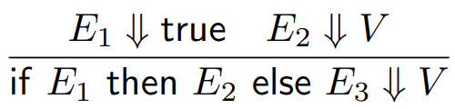
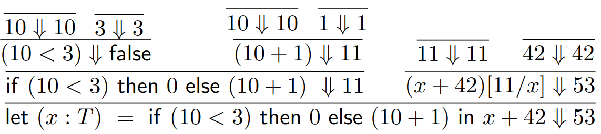
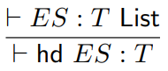
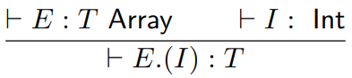
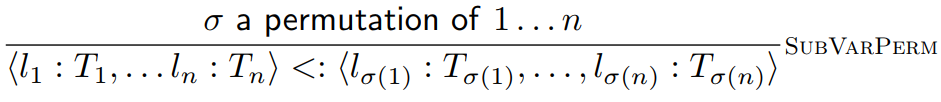
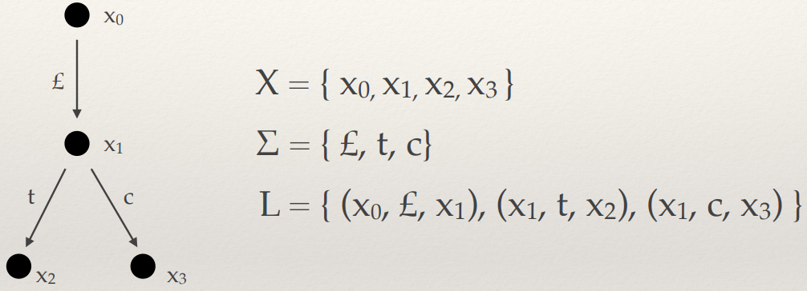

Programming Language Concepts
Matthew Barnes
Syntax to execution 2
Introduction 2
Syntax and BNF 4
Names, scoping and binding 7
Lexing and parsing 8
In Haskell 9
Testing 10
Introduction to types 10
Type derivation 12
Type checking and type inference 14
Reasoning about programs 19
Intro to semantics 19
Denotational semantics 19
Operational semantics 20
Type safety 23
Preservation 24
Progress 25
Structured types 26
Structured types 26
Subtyping 31
Objects 39
Lambda calculus and Curry Howard 46
Fixed-point combinator 49
Curry-Howard correspondence 51
Concurrency in programming languages 54
Race conditions and mutual exclusion 54
Atomicity, locks, monitors 58
Barriers and latches, performance and scalability, CAS and
fine-grained concurrency 61
Message passing, software transactional memory 65
Rust and concurrency 70
Semantics of concurrency 73
Labelled Transitions Systems 73
Simulations 76
Bisimulations 82
TL;DR 84
Syntax to execution 84
Testing 86
Reasoning about programs 87
Structured types 88
Concurrency in programming languages 89
Semantics of concurrency 90
Syntax to execution
Introduction
-
Application domain: a field of computation fulfilled by various languages and
paradigms
-
The types of application domain are:
-
Scientific computing (Fortran, Mathematica, MatLab, OCAML, Haskell)
-
Business applications (COBOL, BPEL)
-
Artificial Intelligence (LISP, Prolog)
-
Systems (C, C++)
-
Web (HTML, XHTML, Perl, PHP, Ruby, JavaScript)
-
A programming language family is a group of languages with similar / the same set of
conventions and semantics.
-
The families of languages are:
-
Imperative (C, C++, Java, C#, Pascal)
-
Functional (OCaml, Haskell, ML, Lisp, Scheme, F#)
-
Logic / Declarative (Prolog)
-
There are two kinds of software design methodologies:
-
The high-level methodology, data oriented, relates to ADTs and object-oriented design. It cares less
about program efficiency and more about the structure of
code.
-
The low-level methodology, procedure oriented, emphasises decomposing code into logically independent
actions, and can also emphasise on concurrent
programming.
-
Cross-fertilisation is where concepts from one family can be used in languages
belonging to another.
-
For example, functional programming can be used in
imperative languages like Java, C# and Rust.
-
Monads can allow programmers to write imperative style code
in functional languages.
-
Declarative code, like regexp, SQL and HTML, can be written
in some imperative languages.
-
How good is a language? We need to follow it through
evaluation criteria!
-
How easy is it to read the code?
-
You can make complex things seem simpler just by making it
more readable
-
Feature multiplicity: multiple ways to achieve the same result
-
Syntactic sugar: a simpler, more intuitive way to write something
-
Remember, feature multiplicity and syntactic sugar are not the same thing. Feature multiplicity means there are lots
of ways of achieving the same result with different
semantics, whereas syntactic sugar is just an alternate way
of writing something while still keeping the exact same
semantics.
-
Orthogonality: a property of two features, meaning that they are
independent of each other. Informally, it means that there
are no constraints in combining two features together. An
example of non-orthogonality would be that you can’t create a void variable in C. Similarly, an array can contain any data type except void. For example when applying public and static to a method, they do not interfere with each other,
so these two are orthogonal.
-
Obfuscation: intentionally making code hard to understand
-
How well does the language abstract hardware and
concepts?
-
It could use functions, modules, classes or objects.
-
More abstraction = Further separation from machine-level
thinking
-
How efficient is your language?
-
Efficiency can be described in both syntax and in
semantics.
-
C could be said to have semantical efficiency since C
compilers are great at optimising code.
-
Haskell could be said to have syntactical efficiency since
you can implement an algorithm like quicksort in 5 lines,
whereas C would require significantly more.
-
A brief history of time programming languages:
-
Early 1950s: people made Fortran, the first high-level compiled
language.
-
IBM704 hardware supported floating point numbers.
-
Late 1950s: LISP was made, the first functional language (+ a
bootleg named Scheme)
-
1960s: everyone got together and made ALGOL. They realised
programming languages could be their own field of
study.
-
1970s: COBOL was made. Emphasises data processing. C, Unix,
Prolog and Ada were made.
-
1970s-80s: BASIC for microcomputers was made
-
1980s: ML was made, everything is typed at compile time.
Smalltalk was made and the discovery of object-oriented
programming.
-
1990s: Java and the JVM was made, it had flexibility and
portability
-
2000s: Scripting and server-side programming was born -
Perl, Python, PHP, JavaScript, Ruby etc.
Syntax and BNF
-
Syntax: the rules / language for writing programs
-
Semantics: the meaning of programs, what happens when we run
them
-
BNF (Backus-Naur form): a metalanguage that describes a CFG.
-
It has terminals (also called tokens or lexemes) and
non-terminals, just like a CFG.
-
Here is an example of BNF:
<expr> ::= <expr> + <expr> | <expr> *
<expr> | <lit>
<lit> ::= 1 | 2 | 3 | 4
-
A legal sentence of a grammar is strings for which there is
a derivation in the BNF, just like how CFGs accept strings
for which there is a derivation for.
-
These derivations can be transformed into parse trees.
-
However, some sentences might have more than one
derivation, making the grammar ambiguous.
-
For example, the string “2 + 3 * 4” has two
derivations in the above BNF:
|
Derivation #1
|
Derivation #2
|
|

|

|
-
Which one do we pick? They’ll both yield different
results.
-
We could just put parentheses everywhere, but there’s
a better way.
-
We know that * binds tighter than + (it has higher
precedence), so why don’t we adjust our BNF to reflect
that?
<expr> ::= <mexpr> + <expr> |
<mexpr>
<mexpr> ::= <bexpr> * <mexpr> |
<bexpr>
<bexpr> ::= (<expr>) | <lit>
<lit> ::= 1 | 2 | 3 | 4 | ...
-
Now, 2 + 3 * 4 has a unique parse tree.
-
The reason addition is above multiplication here is that we
evaluate up the parse tree, so multiplication is evaluated
first (using call-by-value).
-
Call by name evaluates down, but it achieves the same
result as call-by-value, since it treats the arguments
as unevaluated ‘thunks’.
-
Operations that have the same precedence, like +, - and *,\
can also have ambiguous parse trees. Therefore, bracketing
becomes important.
-
Additionally, some operations are not associative, for example 1 - (2 - 3) isn’t the same as (1 - 2) -
3.
-
How can we make operations associate to the left or right?
Let’s adjust our BNF so that the + operator associates
to the left instead of the right:
<expr> ::= <expr> + <mexpr> |
<mexpr>
<mexpr> ::= <bexpr> * <mexpr> |
<bexpr>
<bexpr> ::= (<expr>) | <lit>
<lit> ::= 1 | 2 | 3 | 4 | …
-
Note that we just swapped round the terms in the
<expr> definition—it’s that easy! Now
1+2+3 will associate to ((1+2)+3).
-
A general rule for associativity is that the highest level
expression is on the same side as the associativity:
-
The highest level expression is on the left hand side for
left-associativity
-
The highest level expression is on the right hand side for
right-associativity
-
EBNF (Extended Backus-Naur form): A syntactic sugar for BNF. It doesn’t add anything
new, it just makes things easier to write.
-
Here’s a list of symbols that can be used in EBNF, as
apparent in the proposed ISO/IEC 14977 standard:
|
Usage
|
Notation
|
|
definition
|
=
|
|
concatenation
|
,
|
|
termination
|
;
|
|
alternation
|
|
|
|
optional
|
[ ... ]
|
|
repetition
|
{ ... }
|
|
grouping
|
( ... )
|
|
terminal string
|
“ ... “
|
|
terminal string
|
‘ ... ‘
|
|
comment
|
(* ... *)
|
|
special sequence
|
? ... ?
|
|
exception
|
-
|
<if_stmt> ::= if <expr> then <stmt> [else <stmt>]
The [else <stmt>] is optional because it’s enclosed in square
brackets
<switch_stmt> ::= switch (<var>) { { case <lit> : <stmt>; } }
The {case <lit> : <stmt>;} can be repeated because it’s enclosed in curly
braces
Names, scoping and binding
-
Name (aka identifier): reserved keywords with certain behaviours / functions in
a language
-
Variable: an allocated memory location
-
Nowadays, they’re more like placeholders for values
of a specific type.
-
Aliasing: when two variables point to the same location
-
An example of this in C is using pointers: int*ptr=x. ptr points to x’s location.
-
Binding: an association between an entity and an attribute
- Examples:
-
variable and its type
-
variable and its scope
-
There are two kinds of binding:
-
Static binding: occurs before execution and remains unchanged
during
-
This is prevalent in C where you explicitly set a type, or
in Haskell where the most general type is used
(polymorphism)
-
Type checking is done at compile time, so there are no
runtime errors concerning types
-
It’s also safer: if you mess up your types,
you’ll know at compilation time instead of
run-time.
-
Dynamic binding: first occurs during execution or changes during
-
This is prevalent in JavaScript where a variable can change
type depending on what value you put in it
-
You can code stuff faster, but things are more likely to go
wrong during execution
-
You can also create ad hoc polymorphic functions
-
Increases run-time of the program as the program needs
type-check and run the main thread at the same time. This is
negligible on modern computers though.
-
Kinds of variables (Memory Allocation):
-
Static variables: bound to a location in memory when we initialise
them
-
(e.g. a global C variable)
-
Stack variables: memory is allocated from the run-time stack and
deallocated when the variable is out of scope
-
(e.g. a local Java variable in a method)
-
Explicit heap variables: memory is bound explicitly
-
(e.g. using malloc in C or new in Java)
-
Implicit heap variables: the variable is only brought into being when it is
assigned values
-
(e.g. any JavaScript variable, you can’t make an
empty JavaScript variable)
-
The scope of a variable is the location in which you can use
it.
-
Local scope variables are only visible within their own
“block”
-
Global scope variables can be seen anywhere, unless it’s
hidden by a locally scoped variable.
-
Static (lexical) scope variables are variables where the scope can be
determined at compile time
-
Dynamic scope variables are global variables that are set a
temporary value within a scope, and their old value is set
back when that scope is exited. It’s not even a scope,
making this a misnomer.
Lexing and parsing
-
Lexical analysis (lexing) is the process of pattern matching on text.
-
In it, we identify tokens and form an interface for the
parser.
-
Tokens are identified with regular expressions, and then
the lexer constructs an automaton, which is executed as
individual characters are read.
-
This is possible because the power of regular expressions
matches that of finite automata.
-
An example of a library that performs lexical analysis
would be “alex”.
-
After lexing, we usually get a list of tokens, which we can
feed into a parser to give it some kind of meaning.
-
If you want to look at lexical analysis more, geeks for
geeks has a good page on it: https://www.geeksforgeeks.org/introduction-of-lexical-analysis/
-
Parsing is the process of creating a syntax tree from a list of
tokens.
-
There are two ways of doing this:
-
LL grammars (leftmost derivations)
-
recursive descent parsers
-
Works like context free grammars
-
LR grammars (rightmost derivations)
-
Works like pushdown automata
-
Top-down LL parsing, or recursive-descent parsing, works by using context free grammars, like:
<expr> -> <term> {(+ | -)
<term>}
<term> -> <factor> {(* | /)
<factor>}
<factor> -> id | int_constant | (<expr>)
-
However, be careful of left recursion, because if we have
left recursion our parser could enter an infinite
loop.
-
For example, the grammar...
-
A → A + B
-
... has left recursion. The parser could keep recursing
into the left-hand side A and never stop.
-
A way to avoid this is by putting our grammar into Greibach
normal form, so each iteration captures at least one token
before recursing into any non-terminals.
-
An example of a library that does recursive-descent parsing
would be “parsec”.
-
Sometimes, in top-down LL parsing, we might need to know
the next few tokens to avoid ambiguity.
-
We can just make our grammar not left recursive (which is
called left factoring)
-
Or, we can use a parser LL(k) where k is the
lookahead.
-
Bottom-up LR parsing works similarly to a deterministic pushdown automaton
and uses a stack.
-
The statespace and transition functions are precomputed - this is known as an LR parsing table.
-
The time complexity of parsing is linear (the size of the
input string)
-
This requires preprocessing; an example tool would be
“yacc”.
-
Two classic C tools for building lexers and parsers are
“lex” and “yacc”,
respectively.
-
“Happy” is a Haskell variant for
“yacc”.
In Haskell
-
We have a variety of tools to pick from, like:
-
Alex (generates lexers)
-
Parsec (recursive descent library)
-
Happy (a compiler compiler, or a parser generator)
-
Alex is similar to the classic C tool “Lex”
-
An Alex input file consists of regular expressions, which
are the token definitions.
-
You invoke Alex with the following command:
-
alex { option } file.x { option }
-
Alex usually creates ‘file.hs’ which contains
the source for the lexer.
-
Alex provides a basic interface to the generated
lexer.
-
When Alex parses your Tokens.x file and gives you a
Tokens.hs file, that file provides definitions for:
-
type AlexInput
-
alexGetByte :: AlexInput -> Maybe (Word8, AlexInput)
-
alexInputPrevChar :: AlexInput -> Char
-
alexScanTokens :: String -> [Token] (used for lexing)
-
Basically, when Alex creates your Tokens.hs file, you can
‘import’ that into your Haskell code and start
using alexScanTokens to lex strings straight away!
-
The lexer is independent of input type.
-
There are other wrappers too, like:
-
“posn” wrapper provides more information about line and column numbers,
useful for syntax errors
-
“monad” wrapper state monad can keep track of current input and text
position
-
“monadUserState” wrapper extends monad wrapper, but includes the AlexUserState
type
-
Parsec is a library that combines small parsec functions to
build more sophisticated parsers.
-
Parsing with Parsec is top-down recursive.
-
Two important functions in Parsec are:
-
makeTokenParser similar to Alex
-
buildExpressionParser
-
Happy is a bottom-up parser generator, inspired by
yacc.
-
It’s generally faster than top-down recursive
parsing.
-
In fact, it’s so good that GHC uses it (the compiler
for Haskell).
-
Like Alex, it requires a separate input file that defines a
grammar.
-
When you run Happy, it outputs a compilable Haskell
module.
-
You can invoke Happy using the following command:
-
happy [ options ] file [ options ]
Testing
Introduction to types
-
Type system: a tractable syntactic method for proving the absence of
certain program behaviours by classifying (program) phrases
according to the kinds of values they compute
-
In English, a type system is a set of rules that assigns
types to various constructs of a computer program, such as
variables, expressions, functions or modules. In other
words, when you have “var x = 5” in a program, the type system is the one that goes
“that’s an integer”.
-
Types are abstract enough to hide away low-level details like memory, and
they’re also precise enough to let us formalise and check properties using
mathematical tools.
-
What do types do for us?
-
With type systems and types, we can:
-
ensure correctness and guarantee the absence of certain
behaviours
-
enforce higher-level modularity properties
-
enforce disciplined programming (unless you’re using
weak typing)
-
How do we use types?
-
Strongly typed: prevents access to private data, from corrupting memory
and from crashing the machine e.g. java
-
Weakly typed: do not always prevent errors but use types for other
compilation purposes such as memory layout e.g. C
-
Static typing: checks typing at compile time e.g. C
-
Dynamic typing: checks typing during runtime e.g. JavaScript
-
Strong vs Weak
-
With strong, types must be declared “whenever an
object is passed from a calling function to a called
function, its type must be compatible with the type declared
in the called function”.
-
Strong => Verbose
-
With weak typing, the wrong type may be passed to a
function, and the function is free to choose how to behave
in that case.
-
Weak type languages coerce data to be of the required
type.
-
Basically, strong vs weak is all about how types are
implicitly converted from one type to another, e.g. string
to an int.
-
A language that is blatantly strong is Java, because
it’s so adamant and strict about types (and is often
criticised so).
-
A language that is blatantly weak is Javascript, because it
implicitly converts everything (in fact, it’s very
hard to get a typing error in JS!):
|
Example
|
Result
|
Explanation
|
|
1 + true
|
2
|
The boolean value true is coerced to 1.
|
|
true - true
|
0
|
|
true == 1
|
true
|
|
[] + []
|
empty string
|
In case of an object (array is an object as
well), it is first converted to a primitive
using the toString method. This yields an empty
string for an empty array, and the concatenation
of two empty strings is an empty string.
|
|
true === 1
|
false
|
The triple equals operator prevents type
coercion. This is why most of the time you want
to prefer it over “==”, which
applies coercion.
|
|
91 - “1”
|
90
|
The string “1” is coerced to the
number 1.
|
|
9 + “1”
|
91
|
In this case, the “+” operator is
considered as string concatenation. 9 is coerced
to “9” and thus the result of
“9” + “1” is 91.
|
-
Static vs Dynamic
-
Static types use approximation because determining control
flow is undecidable
-
Compile time error can avoid run time errors
-
Static is good where types are used for memory layout, like
C
-
It is bad to use dynamic with critical systems, because
dynamic doesn’t check types until runtime
|
|
Weak
|
Strong
|
|
Dynamic
|
PHP, Perl, Javascript, Lua
|
Python, Lisp, Scheme
|
|
Static
|
C, C++
|
Ada, OCaml, Haskell, Java, C#
|
-
When do we check types?
-
With statically typed languages, type checking is done at compilation. Type checking done on the AST (Abstract Syntax Tree) is
called semantic analysis.
-
Type inference = compiler computes what type is, like
‘var’ in Javascript or in Java
-
A type checker is an algorithm written in some high level language that
checks the type of a program to see if it all holds
up.
-
How can we trust type checking algorithms?
-
If our program is secure with its types, it has type safety.
-
“Well-typed programs never go wrong” - Robin
Milner
-
What does it take to prove type safety?
-
“Well-typed programs never go wrong”
-
To prove this statement, you need to:
-
Know what well-typed means
-
Know what programs means
-
Know what never go means
-
Know what wrong means
-
We inductively define typing relation, like a proof in propositional logic
-
We inductively define reduction relation, defines how program evaluates through runtime
states
-
We inductively define description of error states of program
-
We use mathematical descriptions to try to prove that type
safety holds
Type derivation
-
With programming languages, the compiler needs to check
that the program doesn’t consume data of the wrong
type.
-
Therefore, it needs to perform type derivation.
-
First of all, we’re going to define a toy language
for our examples:
-
T, U ::= Int | Bool
-
E ::= N | true | false | E < E | E + E | x |
-
| if E then E else E
-
| let (x : T) = E in E
-
Each ‘fragment’ of the program needs a
type.
-
We can define a typing relation written like this:
-
Which means “E has type T”, where E is the
program and T is the type.
-
Examples are:
-
⊢ false : Bool
-
⊢ 56 : Int
-
⊢ “KING CRIMSON: IT JUST WORKS” :
String
-
We may need to approximate the type if we can’t
determine it statically.
-
We can apply this typing relation to programming languages
using inductive rules.
-
As a quick refresher, there are two kinds of rules with
inductive rules: base cases, and inductive steps.
-
The base case is our smallest, atomic rule, and is usually
used for literals. For example:

-
The inductive step takes a program and splits it up into
smaller rules, for example:
-
In this syntax, the relation below the line is split up
into the relations above the line.
-
With the base cases, they can’t be split up into
anything, because base cases are atomic.
-
But what if we have some program that defines variables
with types, like this:
-
How do we split this up using inductive rules?
-
If we do something like:
-
We won’t remember what type x is when we split up E2, so we’ll run into a problem.
-
We need to remember what the type of x is! For this, we’ll use type environments.
-
Type environment: A mapping from variables to types. It’s represented
by the capital Greek letter gamma: Γ
-
It goes to the left of the tack, like this:
-
So now, we can remember variable types! But first, we need
to add a mapping from x to its type into our type environment when we split
up this let expression. We can do that by writing:
-
The comma means that we’re adding the mapping from x to type T into our type environment gamma (Γ). So now, when we split up E2 even further, we can remember what type x is.
-
Now that we have type environments, we can define a rule
for variables:
-
We can also define rules for more programs, such as
comparisons:
-
Just a note, we’re adding lambda calculus to our toy
language:
-
T, U ::= Int | Bool
-
E ::= n | true | false | E < E | E + E | x |
-
| if E then E else E
-
| let (x : T) = E in E
-
λ (x : T). E
- E E
Type checking and type inference
-
Formally, a set of inference rules S defined over programs used to define an inductive
relation R is called syntax directed if, whenever a program (think AST) E holds in R then there is a unique rule in S that justifies this. Moreover, this unique rule is
determined by the syntactic operator at the root of E.
-
Informally, a language compiler is syntax directed if it uses a parser to figure out what the program does. In
other words, the semantics of a program (what it does)
depends on the syntax itself (what is written, so pretty
much any compiler used today is syntax directed).
-
As it happens, ASTs and type derivation trees are exactly the same shape.
-
Here’s an example, with the program:
-
if (x < 3)
- then 0
-
else (x + 1)
-
If you flipped that red tree upside down and compared it
with that AST, they’d be the same tree. Trust
me.
-
Why does this matter? Well, instead of having two trees,
one for interpreting and one for types, why not just do type
checking in the AST? This is basically type inference, which
we will touch on in a moment.
-
Another thing is the inversion lemma, which is inferring the type of a subprogram given the
type of the whole program.
-
For example, we have no idea what type E1 is on its own, but if we see it in this sort of
context:
-
Now it’s obvious that E1 is a boolean type. That’s inversion
lemma!
-
The inversion lemma can be applied to nearly every term in
our toy lambda language:
-
If Γ ⊢ n : T then T is Int
-
If Γ ⊢ b : T then T is Bool
-
If Γ ⊢ x : T then x : T is in the mapping
Γ
-
If Γ ⊢ E1 < E2 : T then Γ ⊢ E1 :
Int and Γ ⊢ E2 : Int and T is Bool
-
If Γ ⊢ E1 + E2 : T then Γ ⊢ E1 :
Int and Γ ⊢ E2 : Int and T is Int
-
If Γ ⊢ if E1 then E2 else E3 : T then Γ
⊢ E1 : Bool and Γ ⊢ E2 : T and Γ
⊢ E3 : T
-
If Γ ⊢ λ (x : T) E : U’ then
Γ , x : T ⊢ E : U and U’ is T →
U
-
If Γ ⊢ let (x : T) = E1 in E2 : U then Γ
, x : T ⊢ E2 : U and Γ ⊢ E1 : T
-
If Γ ⊢ E1( E2 ) : U then Γ ⊢ E1 : T
➝ U and Γ ⊢ E2 : T for some T
-
That’s great, and now we have type inference, but we
have one problem.
-
What if we don’t know the types?
-
For example, if we had a function that adds two arguments
together, they could be integers, floats, strings etc.
-
We can’t have a single type for that! So what do we
do?
-
We use type variables and unification!
-
Type variable: a symbolic value to represent some unknown type with
constraints.
-
We’ve already been using type variables in Haskell,
where a would be a type variable:
-
(+) :: Num a => a -> a -> a
-
Unification: the process of testing an argument against the
constraints of a type variable
-
Here’s an example of unification with the
program:
-
let foo = λ(x) if (x < 3) then 0 else (x +
1)
-
in let cast = λ(y) if (y) then 1 else 0
-
in cast (foo (42))
|
Step
|
Explanation
|
Program
|
Types
|
|
0
|
We haven’t done anything yet.
|
let foo = λ(x) if (x < 3) then 0 else
(x + 1)
in let cast = λ(y) if (y) then 1 else
0
in cast (foo (42))
|
N/A
|
|
1
|
We will now simplify the first let.
We’re going to create type variables for
the variable ‘foo’ and the
expression that ‘foo’ is equal to,
and the rest of our program.
|
let foo = λ(x) if (x < 3) then 0 else (x +
1)
in let cast = λ(y) if (y) then 1 else
0
in cast (foo (42))
|
a = ?
b = ?
|
|
2
|
Now we’re going to dig deeper into that λ(x)
We can give type variables to the parameter x and the lambda body.
Also, now that we have c and d, we can build up
the type variable a from that, because we know
it’s a function (it’s got lambda in
it), so a is c -> d.
|
let foo = λ(x) if (x < 3) then 0 else (x + 1)
in let cast = λ(y) if (y) then 1 else
0
in cast (foo (42))
|
a = c ⟶ d
b = ?
c = ?
d = ?
|
|
3
|
Let’s look more at that if
statement.
Obviously, x < 3 is a boolean, so no
problems here. Plus, this condition can only
work if x is an integer, so it’s likely
that the type variable c is an integer.
0 is most definitely an integer, and x + 1
looks like it could be an integer too, so it
would be fair to say that the type variable
‘d’ is an integer.
|
let foo = λ(x) if (x < 3) then 0 else (x + 1)
in let cast = λ(y) if (y) then 1 else
0
in cast (foo (42))
|
a = c ⟶ d
b = ?
c = Integer
d = Integer
|
|
4
|
Now let’s split up that blue bit (the bit
we haven’t evaluated yet).
Let’s give everything type variables
first, like ‘cast’ and the
expression that cast equals, and cast(foo(42)).
This also means we can say b = f, because the
type of a let is the type of the expression
it’s passing variables to.
|
let foo = λ(x) if (x < 3) then 0 else (x + 1)
in let cast = λ(y) if (y) then 1 else 0
in cast (foo (42))
|
a = c ⟶ d
b = f
c = Integer
d = Integer
e = ?
f = ?
|
|
5
|
Let’s unfold that λ(y) and give it the type variable:
e = g -> h
where
(y) is type g
and
if (y) then 1 else 0 is type h
|
let foo = λ(x) if (x < 3) then 0 else (x + 1)
in let cast = λ(y) if (y) then 1 else 0
in cast (foo (42))
|
a = c ⟶ d
b = f
c = Integer
d = Integer
e = g ⟶ h
f = ?
g = ?
h = ?
|
|
6
|
Let’s unfold the if statement in that y
lambda.
It’s clear that y is a boolean, because
it’s the only thing in the condition, so g
is a boolean type.
1 and 0 are integers, so it makes sense that h
would be an integer.
|
let foo = λ(x) if (x < 3) then 0 else (x + 1)
in let cast = λ(y) if (y) then 1 else 0
in cast (foo (42))
|
a = c ⟶ d
b = f
c = Integer
d = Integer
e = g ⟶ h
f = ?
g = Boolean
h = Integer
|
|
7
|
Let’s unfold the applications now.
The application is cast(foo(42)), and we already know the type of cast; it’s h, so f = h.
By unwinding foo(42), we can tell that c is an
integer because an integer is being passed in as
an argument. We’ve already got the type of
c, and it all matches up fine.
But here’s where the problem lies: since
the return type of foo is being passed into
cast, that must mean g = d. However, g is a boolean and d is an integer.
Objection! There is a glaring contradiction in
this source code!
|
let foo = λ(x) if (x < 3) then 0 else (x + 1)
in let cast = λ(y) if (y) then 1 else 0
in cast (foo (42))
|
a = c ⟶ d
b = f
c = Integer
d = Integer
e = g ⟶ h
f = h
g = Boolean
h = Integer
g = d
Boolean = Integer?
|
Reasoning about programs
Intro to semantics
-
The semantics of a program is the meaning of the program;
what does it actually do?
-
There are formal ways of giving the semantics of a
program:
-
Denotational semantics - mapping every program to a mathematical
structure in some domain
-
Operational semantics - inductively maps programs and values they
produce, or states the programs can transition between are
used
-
Axiomatic semantics - use formal logic, like Hoare logic, to prove
properties of a program
Denotational semantics
-
With denotational semantics, we map our programs to elements of a semantic
domain.
-
Semantic domain: a set of possible values a program can be (it’s
basically a type)
-
For example, the semantic domain of a program that adds two
integers could be the set of all integers.
-
To do denotational semantics, we say that if there exists
a
-
Γ ⊢ E : T
-
there must exist a:
-
[[ E ]]σ = V
- Where:
-
σ is a mapping from free variables in Γ to a value in the semantic domain
-
V is the value in the semantic domain that E represents
-
If this is true, then we can say that σ semantically entails Γ, or σ ⊨ Γ
-
Here is an example with the toy lambda language:
-
[[ true ]]σ
= true
-
[[ false ]]σ
= false
-
[[ n ]]σ
= n (the corresponding natural
in N)
-
[[ E < E’ ]]σ
= true if [[ E ]]σ < [[
E’ ]]σ
-
[[ E < E’ ]]σ
= false otherwise
-
[[ E + E’ ]]σ
= [[ E ]]σ + [[ E’
]]σ
-
[[ if E then E’ else E’’ ]]σ = [[
E’ ]]σ if [[ E ]]σ = true
-
[[ if E then E’ else E’’ ]]σ = [[
E’’ ]]σ if [[ E ]]σ = false
-
[[ λ (x : T) E ]]σ
= v ↦ [[ E ]]σ [ x ↦ v ]
-
[[ let (x : T) = E in E’ ]]σ = [[ E’
]]σ [ x ↦ [[ E ]]σ ]
-
[[ E E’ ]]σ
= [[ E ]]σ( [[ E’ ]]
)σ
-
There’s criticism about denotational semantics, such
as:
-
It’s just renaming programs
-
The model is “too big” (Int -> Int defines all the functions, even ones that are impossible)
-
Modelling recursion is very hard
Operational semantics
-
With operational semantics, we use inductively defined relations to map programs to
values.
-
It’s very similar to type checking!
-
There’s two kinds of operational semantics:
-
In big step semantics, we have relations from programs to values.
-
We split these relations to other, smaller relations along
with some conditions that must hold true.
-
These relations are written as E ⇓ V, where E is the
program and V is the value.
-
For example, for E1 > E2 ⇓ true to be true:
-
E1 must evaluate to some number n
-
E2 must evaluate to some number m
-
n > m must be true
-
So as you can see, we’ve split up our relation into
smaller relations and we’ve also got a condition along
with it that must hold true.
-
There are other rules too, such as:

-
For literals, or rules that can’t be split up any
further, we write:
-
To do things like substitution, we can do:
-
Where E2[V/x] is an expression where V has been substituted in place of x within E2.
-
Like type checking, we can apply this for the whole program
to check the semantics of a program.
-
Small step semantics is similar, but instead of analysing the parts
that make up the program, we analyse the steps the program
takes to go from one state to another.
-
To put it in layman’s terms, when you do the sum
(6 / 3) + 2, you don’t analyse how the divide operation works,
then how the plus symbol works, then each number etc. do
you? No! You take it one step at a time and simplify the
whole thing until you get one number at the end.
-
So if we used small step with this sum, we’d have
something like:
-
(6 / 3) + 2 -> (2) + 2
-
(2) + 2 -> 2 + 2
-
2 + 2 -> 4
-
That’s the difference between small step and big step
semantics.
-
By using small step, we can see more clearly how a program
behaves.
-
In small step semantics, we prove that each step of the
computation is logically sound.
-
More formally, we use an inductive relation of the form E -> E’ where E is a step in the computation and E’ is the next step after E.
-
There are lots of small step relations, so I’ll
explain a few so you can get the general gist of it:
|
Small step relation
|
Explanation
|
|

|
Here, the program n < m moves to just ‘true’. The
only way that this can happen is if n is less
than m, so the predicate n < m is at the top.
|
|

|
Here, the program moves from n < E to n < E’. If the program is simply replacing E with
E’, then that means E must be equivalent
to E’ in some way. Therefore, the step E -> E’ is at the top.
|
|

|
Here, the program is moving from an if
statement to the program that should run if the
condition is true. We can see that the condition
is the literal ‘true’, so this
program makes perfect sense. There’s no
need to prove anything further because
there’s no ambiguity or room for doubt;
this is exactly what should happen.
|
-
Let’s use big step and small step in an actual
example, so we can see them in action!
-
We have our program:
-
let (x : Int) =
-
if (10 < 3) then 0 else (10 + 1)
-
in x + 42
-
The value is 53, and we want to ensure that the semantics
of our program is correct.
-
With big step semantics, we would do this as follows:

-
We start with the whole program and split it up until we
reach just literals.
-
With small step, we would do this:
-
We analyse and prove each step of the computation, not each
term in the program.
-
Sometimes, we don’t even need the proof tree:
-
As you can see, big step and small step semantics do the
same thing in different ways.
-
To formalise this we first define the following:
-
If and only if there exists a (possibly empty)
sequence:
-
E = E1 → E2 → … → En = E’
Type safety
-
Operational semantics sometimes isn’t enough.
-
It doesn’t handle all ill-typed programs.
-
For example, operational semantics would not fail with this
program:
-
if (if (true) then false else 0) then true else 34
-
Why? Because that inner if statement will always return
‘false’ and not ‘0’ (and
‘0’ is not of the boolean type which is required
for the outer if statement), so operational semantics lets
this slide.
-
We need some way to find out if our program is type
safe!
-
How can we formally declare our language as “type
safe”?
-
It must satisfy two properties: preservation and
progress.
-
Preservation: at each step of the program, the type does not
change
-
Progress: well-typed terms never get stuck
-
Let’s go into more detail!
-
When we try to interpret the program:
-
if (if (false) then false else 0) then true else 34
-
We get a type error in the inner if statement, because it
returns ‘0’ when it should be returning a
boolean. This is called getting stuck.
-
It gets stuck because if you try to do small step
operational semantics:
-
if (if (false) then false else 0) then true
else 34
-
-> if (0) then true else 34
-
-> ???
-
There is no relation to continue this process, so we are
stuck at this step and can’t go further.
-
How do we avoid this?
-
In small step semantics, we can just model a run-time error
if we get stuck at a step and can’t go any
further.
-
In big step semantics, it’s a bit trickier. If we
were to do while loops, or recursion, we can’t tell
the difference between a stuck term and a divergent
term.
-
Therefore, we’d need an error relation, ↯
- For example:
-
Would hold for any integer literal ‘n’
-
You’d need all possible cases to handle all possible
errors, but even still, this isn’t enough.
-
Big step semantics only looks at the whole program and the
result, not each computation along the way.
-
Big step can give us weak preservation, but small step can
give us actual preservation.
Preservation
-
Formally, weak preservation goes like this:
-
if ⊢ E : T and E ⇓ V then ⊢ V : T
-
Informally, weak preservation holds if all programs have
the same type as their values (5 + 5 is of type integer, it
evaluates to 10, which is of type integer, so weak
preservation holds).
-
Formally, preservation goes like this:
-
if ⊢ E : T and E → E‘ then ⊢
E’ : T
-
Informally, preservation holds if each step of the
computation has the same type as the computation before
it.
-
Basically, preservation holds if the types don’t
change. Simple, right?
-
How do we prove preservation in our toy language? We need to do a
proof by induction.
-
Our base cases are the literals, Integer and Boolean.
-
The only relations from the literals are:
-
if ⊢ True : Bool and True → True then ⊢
True : Bool
-
if ⊢ False : Bool and False → False then ⊢
False : Bool
-
if ⊢ n : Integer and n → n then ⊢ n :
Integer
-
Which all trivially satisfy preservation, so our base cases
are fine.
-
Now for our inductive cases. We need one inductive case per
rule, but we’ll just do the if statement for this
example.
-
Our if statement is of the form:
-
if E1 then E2 else E3 : T
-
where E1 : Bool
-
and E2, E3 : T
-
There are two possible cases:
-
E1 is some expression and can be reduced from E1 to E1’
-
Remember, in this proof, we have one inductive case for
each rule. So whatever rule E1 falls under, we have an inductive case we can apply
it to, and we’ll see that E1’ is also a boolean. Basically, we can apply this same
proof to E1 to show that E1’ is also a boolean.
-
This means the if statement will become:
-
if E1’ then E2 else E3 : T
-
... and the types will still hold.
-
E1 is some literal and the expression is either E2 or E3.
-
If E1 is some boolean literal, the expression will be
either E2 or E3.
-
But both E2 and E3 are of type T anyway, so the types will hold.
-
This is only for the if statement, but there are lots of
other inductive cases, covering all the other rules of the
language.
Progress
-
It’s not enough to have preservation. What if we have
a well-typed system that allows stuck terms?
-
For example, what if you had a lambda function, sitting on
its own, not being applied to anything? It’s not a
value, like an integer or a boolean. We only want to compute
values, not terms!
-
Formally, progress means:
-
if ⊢ E : T then either E → E’ (for some
E’) or E is a value V
-
Informally, progress means that if you have some term, you
must be able to perform some step towards a value or it must
be a value.
-
When a language has progress, you can’t have terms
that can’t simplify down to values. This means, for
example, you can’t have a function, on its own, that
isn’t being applied to some argument.
-
How do we prove progress in our toy language? We’ll use a proof
by induction, very similar to preservation!
-
Our base cases are the literals, Integer and Boolean.
-
If we have a literal, it trivially satisfies the theorem
because they’re already values.
-
For our inductive cases, again, we need one for each rule,
but we’ll use the if statement as an example.
-
Our if statement is of the form:
-
There are two possible cases:
-
E1 is not a value
-
Like in the preservation proof, we can use the inductive
hypothesis of this very proof on E1 to show that E1 must have some step it can simplify to, E1’.
-
Therefore, this if statement has a step:
-
if E1 then E2 else E3
-
-> if E1’ then E2 else E3
-
This satisfies the theorem.
-
E1 is a value
-
If E1 is a value, that means this if statement has two
possible steps:
-
if true then E2 else E3
-
-> E2
- or
-
if false then E2 else E3
-
-> E3
-
This satisfies the theorem.
-
As you can see, for all cases, if statements must have a
step. This is just one of the many inductive cases for each
of the language rules.
Structured types
Structured types
-
How do we do type derivation on structured types?
-
First of all, the unit type.
-
This type is really easy to understand. This type can only
have one value: the unit value.
-
It looks like this: ()
-
It’s the type of Java methods that take no
parameters, such as: toString()
-
This also means we can thunk expressions into
functions.
-
Thunking: wrapping an expression into a function for later use, for
example:
-
function() { console.log(“Hello World!”);
}
-
console.log(“Hello World!”);
-
You can also unthunk too, when you unwrap an expression from a
function.
-
The type rule for the unit type is this:
-
Second, we have pairs and tuples.
-
We can represent the types of these using the cartesian
product:
-
For tuples, we just extend this:
-
Third, we have destructors.
-
Destructor: a function which unwraps a wrapped value
-
Projection: a special type of destructor which unwraps a tuple,
usually a pair
-
The two projections that unwraps a pair are fst and snd, which you’ve already seen in Haskell.
-
The type rules for these are:
-
For tuples of size n, we need n projection functions.
-
Fourth, we have record types.
-
Record: a special type of tuple in which all the elements are
referenced by a label.
-
C structs and Java objects are all records.
-
The destructor for records are called selections, and are written like so:
-
Exactly the same as Java, right?
-
The syntax goes like this:
|
Record
|
C struct
|
Java object / class
|
|
Student : {
name : String,
ID : Integer
}
|
struct Student {
char* name;
int ID;
};
|
class Student {
String name;
int ID;
};
|
-
The type rules look like this:
|
Type rule in weird maths language
|
Type rule in English
|
|

|
Each value in the record Ei has a respective type Ti
|
|

|
Pretty much the same, except we use
selections
|
-
Fifth, we have sum types.
-
Sum: a type that can handle values of either one type or the
other type
-
They are written like so:
-
The constructors for this type are called injections.
-
The two injections are called inl and inr, where inl states that this is a value of the left type and inr states that this is a value of the right type.
-
Here are plenty of examples:
-
inl 10 could be a type of Int + Int
-
inl true could be a type of Bool + Int
-
inl true could be a type of Bool + Float
-
inl 67.5 could be a type of Float + Bool
-
inr ‘a’ could be a type of Int + Char
-
inr 78 could be a type of String + Int
-
inr Nothing could be a type of Int + Maybe
-
inr () could be a type of () + ()
-
Here are the type rules for these injections:
-
The only destructor for the sum type is pattern matching,
or case:
-
case E of inl x -> E1 | inr x -> E2
-
There’s something weird about sum types.
-
They’re not unique types. Remember that inl true value we had above? See that it can be of type Bool + Int, or Bool + Float, or Bool + anything?
-
This is a complication for type checking. How do we get
around this?
-
We can have unique names for the injections based on the
type it’s referring to.
-
For example, we could have inlI for Bool + Int, and inlF for Bool + Float.
-
Keep in mind that sum isn’t exclusively binary; we
could have lots of types, like T1 + T2 + T3 + ... + Tn.
-
These special sums with uniquely named injections have a
name. They’re called variants!
-
Sixth, we have variants.
-
In the same way that records are just tuples with names,
variants are just sums with names.
-
A variant is written as follows: <l1 : T1, l2 : T2 , ... , ln : Tn>
-
The constructor of a variant is the injection named with
labels: <li = E>
-
So, with our example of Bool + Int and Bool + Float, we could have:
-
E1 = <inlI : Bool, inrI : Int>
-
E2 = <inlF : Bool, inrF : Float>
-
So when we construct a type from one of these variants,
such as <inlF = true> or <inrI = 56>, there is no ambiguity over which sum those values are
from, because the labels tell us so.
-
The type rules look like this:
|
Type rule in weird maths language
|
Type rule in English
|
|

|
When we construct a value from this variant,
the value must have the type that the
label’s injection is assigned to.
|
|

|
When we do a pattern match, or a case statement, the value inside the case statement must be a variant.
Additionally, for each ‘case’ within
the case statement, the pattern match’s type
must match up with the variant’s type (and
the return type of the whole case statement must match up too,
obviously).
|
-
This isn’t completely perfect. For example, what if
we have:
-
E1 = <boolType : Bool, intType : Int>
-
E2 = <boolType : Bool, floatType : Float>
-
Then we try and use <boolType = true>, which variant does this belong to? E1 or E2?
-
Don’t worry; there’s no seventh type which
solves this! In Haskell, it uses the latest variant in which
this constructor is defined, so Haskell would pick E2, assuming that E1 was defined before E2.
-
You may be thinking “What’s the point of
variants? Will I ever use them in a programming language?
No. PLC worst module”
-
You’ve actually been using variants this whole time,
in Haskell, when you use the data keyword!
-
For example, enumerations are just variants with unit types:
-
Days = <Mon : (), Tues : (), Wed : (), Thu : (), Fri :
(), Sat : (), Sun : ()>
-
To get a ‘Monday’ instance: <Mon = ()>
-
It’s just that the unit types are abstracted away by
syntactic sugar, so you’re left with:
-
Days = <Mon, Tues, Wed, Thu, Fri, Sat, Sun>
-
To get a ‘Monday’ instance: <Mon>
-
data Days = Mon | Tues | Wed | Thu | Fri | Sat | Sun
-
You can also mix and match labels of unit type and labels
of non-unit type.
-
This is exactly what the Maybe structure does. Maybe is
just a variant!
-
Maybe = <Nothing : (), Just : a>
-
Maybe = <Nothing, Just : a>
-
data Maybe = Nothing | Just a
-
You want another example?
-
What if I told you that the syntax of lambda calculus can
be modelled in one big variant?
-
Lambda = <Value : Char, Abs : Char × Lambda, App :
Lambda × Lambda>
-
data Lambda = Value Char | Abs Char Lambda | App Lambda
Lambda
-
Where Char is used as a variable name.
-
What if we wanted to use pattern matching in our toy language?
-
We can do so like this:
-
Where pi* just encompasses all the information about the pattern
matched object.
-
It gets a little complicated because now we’ll need a
type system for the language of patterns, but we won’t
worry about that.
-
Seventh, we have lists and arrays.
-
Lists are easy, we can model them like we do in Haskell,
with the cons operator ::
-
We can also model the head and tail functions:

-
Arrays feel like they’d be the same, but
they’re not structural types. You can’t build
them up, they have no constructor and you can’t
pattern match on them.
-
That won’t stop us from modelling them, though! We
can treat arrays a bit like records, except the indexes are
labels:

-
Lastly, we have functions.
-
Functions, like arrays, are not structural types. However,
we can still model their types.
-
We can just have T -> U, where T is the parameter type and U is the return type.
-
T or U can also be a function, allowing us to have
higher-order functions.
-
The type rule for functions is:
-
Where “fun(x : T) -> E” is the function, x is the parameter and E is the return value.
Subtyping
-
First of all, what is subtyping?
-
Subtyping: loosens our strict type checking and allows us to use
subset types.
-
That sounds weird, but if you’ve used any OOP
language, you’ve done subtyping before.
-
Before we go into detail, subtyping is a property of
polymorphism.
-
Polymorphism: literally means “many shapes”
-
There are three kinds of polymorphism:
-
Parametric: C++ templates, Java generics etc.
-
Subtype: Inheritance in OOP, duck typing
-
Ad Hoc: overloading functions and methods
-
Ad hoc is boring, so we won’t talk about that.
Parametric is interesting, but that’s not why
we’re here.
-
This topic is all about subtype polymorphism (big
surprise).
-
There’s two kinds of subtyping:
-
Nominal: explicitly calling a type a child type of some parent
type. Basically inheritance in OOP.
-
Structural: if a type has all the properties of a parent type, then
we can just call it a child type. Basically, that’s
duck typing. “If it looks like a duck, swims like a
duck, and quacks like a duck, then it probably is a
duck”. The wikipedia article shows a good example.
-
In the following examples, I will be using the types
“Dog” and “Animal”, where
“Dog” is a subtype of
“Animal”.
-
Every property of an Animal is also the property of a
Dog.
-
This property is called subsumption.
-
More formally, if T is a subtype of U then every value of
type T can also be considered as a value of type U.
-
Here is the type rule for subsumption:
-
As you can see, we’ve defined a new subtyping
relation, <:
-
When you see T <: U, just think of it as T extends U, if that helps.
-
This is applied to both structural and nominal
subtyping.
-
But how do we define this subtyping relation? This is where
the differences between structural and nominal show.
-
In nominal subtyping, even if two types have the exact same
properties, they are unique.
-
In Java, for example:
|
class Address {
String name;
String address;
}
|
class Email {
String name;
String address;
}
|
-
Both Address and Email are identical in properties, but
because they’ve been defined as two different types,
they’re unique. A bit like twins; genetically,
they’re the same, but they’re both their own
person.
-
So how do we define the subtyping relation with nominal
subtyping?
-
Just like in Java, we explicitly state child and parent
relations with extends.
-
So we will do that with our type rule (except instead of extends, it’s subtypes):
-
That’s not enough, we need to define reflexivity and
transitivity, too:
|

|

|
|
A Dog can be treated as a subtype of a
Dog
|
If a JackRussell is a Dog, and a Dog is an
Animal, then a JackRussell is an Animal
|
-
In Java, every type is a subtype of Object, as well, which
helps (except primitives).
-
There’s one small problem though: what if the parent
type is a triple and the child type is a pair?
-
Which two elements does the child inherit?
-
Java fixes this by only allowing classes to have
subtypes.
-
In structural subtyping, everything is implicit. It relies on the
structure to tell if a type is a child type.
-
Some examples will use JavaScript, so apologies if you
don’t know JS!
-
For primities, it’s easy:
-
short <: int
-
float <: double
-
Everything else is based on structure, for example a pair
of Dogs is also a subtype for a pair of Animals.
-
Here’s a type rule for pairs:
-
For records, it gets a bit more complicated.
-
There are three properties of record subtyping that we can
define:
-
Depth subtyping: where the types in a record are subtypes of the
types in another record.
- For example:
-
R1 : { a : Dog, b: Cat } <: R2 : { a : Animal, b : Animal }
-
... so if you had a function f that expected a parameter of type R2, you could pass in a value of type R1 and it’ll work due to depth subtyping.
-
I wrote an example in TypeScript. It’s a bit long, so
if you know TypeScript, look at the link here for a more in-depth, practical example.
-
Here is a type rule for it:
-
Width subtyping: where the child type has more properties than
the parent type.
-
JavaScript supports width subtyping.
-
Here’s two examples, one with records and one with
JS:
|
Records
|
JavaScript
|
|
Dog : {
colour : String,
age : Int,
breed : String
}
<:
Animal : {
colour : String,
age : Int
}
|
// This function expects an animal
function getAge(animal) {
return animal.age;
}
let dog = {
colour: “brown”,
age: 10,
breed: “Golden
Retriever”
};
getAge(dog); // This will work because of width
subtyping
|

-
Permuted fields: fields can be in any order
-
JavaScript also supports this.
-
Here are two examples again:
|
Records
|
JavaScript
|
|
Dog : {
colour : String,
age : Int,
breed : String
}
<:
Dog : {
breed : String,
colour : String,
age : Int
}
|
// This function expects an animal
function getAge(animal) {
return animal.age;
}
let animal1 = {
colour: “brown”,
age: 10
};
let animal2 = {
age: 4,
colour: “red”
};
// These will both work because of this
subtyping rule
getAge(animal1);
getAge(animal2);
|
-
Here is the type rule for this:
-
Not all languages adopt these rules, for example Java
doesn’t adopt depth subtyping.
-
Want an example of type checking with record
subtyping?
|
How do we know that this is type-safe? We use
the type rules above!
|
|

|
|
We’ll use the depth subtyping rule,
because the left S is a subtype of the right S
and the left R is a subtype of the right
R.
After that, we now have two terms to
simplify.
|
|

|
|
We’ll now use the width subtyping rule on
the right term, because the left record has one
extra property compared to the empty right
record.
This ends that branch, so now we can do the
left.
|
|

|
|
Here, we can use the transitivity type rule to
split up the terms.
You may be thinking “why not just use the
width subtyping rule?”
The width subtyping rule only supports one
extra property, so we need to use the
transitivity rule to split up the terms until
the records differ by one property. Don’t
worry though, it’s not a solid rule;
it’s just a formality.
|
|

|
|
Finally, we use the width subtyping rules to
finish the branches, since the records now
differ by one property.
|
|

|
-
What about variants?
-
It’s pretty much the same, except the width subtyping
rule is swapped.
-
Instead of the left having one more property than the
right, it’s the right that has one more property than
the left!
-
Let’s just say we have our days of the week (variants
of the unit type):
-
Days : {Mon, Tue, Wed, Thu, Fri, Sat, Sun}
-
But we have another variant that adds an extra day:
JoJoDay
-
JDays : {Mon, Tue, Wed, Thu, Fri, Sat, Sun, JoJo}
-
If we have a value of type Days, it’s also a value of type JDays, because all the labels in Days exist in JDays.
-
If we have a value of type JDays, it’s not a value of Days, because the label JoJo doesn’t exist in Days.
- Therefore:
-
Days <: JDays
-
{Mon, Tue, Wed, Thu, Fri, Sat, Sun} <: {Mon, Tue, Wed,
Thu, Fri, Sat, Sun, JoJo}
-
Here is the type rule for that:
-
However, depth and permutations are the same:

-
Do you remember when we defined subtyping for pairs?
- For example:
-
if T <: U and V <: V then T x V <: U x V
-
Do you notice how the order of T and U are preserved in the
pair?
-
With T <: U, it’s T on the left and U on the right. In T x V <: U x V, it’s still T on the left and U on the right.
-
This is called covariance, and the pair type constructor is covariant.
-
On the other hand, let’s define some type constructor Foo that takes in a type and creates a new type, like Foo Int, Foo Char etc.
-
Covariance: If Foo is defined such that if T <: U, then Foo U <: Foo T, then Foo would be contravariant.
-
It’s contravariant because in T <: U, it’s T on the left and U on the right, but in Foo U <: Foo T, it’s U on the left and T on the right. They’re swapped!
-
An example of a contravariant type constructor is a
function (in the argument type).
-
Here is a type rule for that:
-
As you can see, it’s covariant in the return type,
but contravariant in the argument type!
- Why?
-
Let’s give this some context:
-
Let’s say we have two types now: Dog extends Animal,
and Guppy extends Fish.
-
Let’s also say we have a function, f, that maps
Animals to Guppies.
-
We can pass in an Animal to our function f.
-
Because a Dog is an Animal, we can also pass in a Dog to
f.
-
The function f returns a Guppy.
-
Since a Guppy is a Fish, f can also return Fish.

-
Putting this together, f can map Animals to
Guppies...
-
... but it can also take in Dogs (which is a child
type)...
-
... and it can return Fish (which is a parent type).
-
Still doesn’t make much sense? Well, if you know
TypeScript, you’re in luck! Here is an implementation
of this example here.
-
Here is a Java example:
|
// note that Number is a super class of Integer
and Double
public static Number foo(Number x) {
return
x.intValue();
}
Number integer = foo(2.5);
|
-
List types are covariant.
-
If you have a list of Dogs, you can cast it as a list of
Animals.
-
Here is a type rule for them:
-
Arrays are weird.
-
Reading from an array is covariant, but writing to an array
is contravariant. Weird, huh?
- Why is this?
-
Let’s go back to our typing of Dog extends Animal
-
Let’s say you have an array of Dogs.
-
If you were to read an element from Dogs, you could cast it as an Animal, because a Dog is an Animal. It’s the same logic as to why lists are
covariant.
-
Now let’s try and describe writing to an array.
-
We can’t write an Animal to the Dog array, because an Animal could be anything: a Cat, a Bird etc.
-
So the only things we can write are Dogs or subtypes of Dogs.
-
That is, unless Animals were a subtype of Dogs. If Animal extends Dog, then we could put Animals into the Dog array. This sounds confusing and unintuitive but keep reading.
-
To write to an array, we need to swap the positions from Dog <: Animal to Animal <: Dog. Only then will writing to an array work, hence making it
contravariant.
-
So how do we have both reading from and writing to an
array?
-
We need to have Dog <: Animal and Animal <: Dog.
-
Obviously, in real-life, that relationship between dogs and
animals does not exist, but because arrays require this
subtype relationship, this makes arrays invariant.
-
However, arrays in Java are not invariant. They’re
covariant. Even though it’s more flexible, this makes
Java arrays not type-safe!
-
Click here to see an example of Java arrays not being
type-safe.
Objects
-
Don’t worry, there’s nothing new in this topic.
We’re going to apply what we’ve learned to
formally ensure Java Jr is well-typed!
-
First of all, we need to define Java Jr through a set of
declarations:
|
Declaration
|
Explanation
|
|
|
The main program, called , contains a set of all the classes within the
program, .
|
|
|
A class,  , needs to have a name , needs to have a name  , a parent class , a parent class  , a constructor , a constructor  , as well as a set of fields and a set of methods , as well as a set of fields and a set of methods  . .
|
|
|
A constructor, , needs to have the name of the class it
constructs, , along with the inherited properties, , and its own properties, , as parameters to the constructor.
It must also start with the method, along with the inherited properties as
the arguments, . Afterwards, the members must be assigned
their values as supplied by the parameters, .
|
|
|
A field declaration, , must have a type, , and a name,  . .
|
|
|
A method  must have a return type , a name must have a return type , a name  , parameters and a return expression , parameters and a return expression  . In Java Jr, that’s all a method can do.
Additionally, a method must return
something. . In Java Jr, that’s all a method can do.
Additionally, a method must return
something.
|
|

|
An expression can be:
-
A literal
-
A variable
-
A method call
-
A field reference
-
A field assignment
-
A class instantiation
-
A ternary expression (like an if statement,
but it returns something)
|
-
Java Jr is a subset of Java; you can compile Java Jr code
using javac and it’ll work.
-
Now we’ve defined the grammar for Java Jr,
let’s give our language some context:
|
Rule
|
Explanation
|
|
|
The function takes in a class and returns the
name of the class.
|
|
|
We can only reference a class from the program (remember, contains a set of classes) if the field
name we use is the same name as the class
(pretty obvious).
|
|
|
The class has no methods (in Java it does,
but in Java Jr it doesn’t).
|
|
|
When a class inherits from class  , the methods within are the methods defined in as well as the methods defined in . , the methods within are the methods defined in as well as the methods defined in .
|
|
|
The class has no fields.
|
|
|
When a class inherits from class , the fields within are the fields defined in as well as the fields defined in .
|
|
|
The class has no method signatures (think of
them like how C declares functions).
|
|
|
When you try to reference the method signatures
of a class , you’ll get all the signatures of the
methods of class as well as the signatures of the parent
class .
|
|

|
If you try to reference the signatures of a
method, you’ll just get the signature of
that method.
|
-
Phew! Well, now we’ve fully defined Java Jr.
-
If you still don’t fully understand how Java Jr
works, don’t worry. Just pretend we’re working
with a watered down version of Java (which is what Java Jr
is). Java Jr only exists for demonstrative purposes
anyway.
-
Now we can start implementing the typing relation and
subtyping relation for Java Jr!
-
First of all, let’s do the types.
-
The first relations we’ll do are base cases:
|
Typing relation
|
Explanation
|
|

|
The Object class is a type.
|
|

|
The int primitive is a type.
|
|

|
The bool primitive is a type.
|
|

|
is a type, if it’s a class defined
within the program .
|
|
Subtyping relation
|
Explanation
|
|

|
The reflexive rule for types. Any type can be
seen as a subtype of itself.
|
|

|
Every type is a subtype of the class (in Java Jr, this includes
primitives, but in Java primitives are not
included).
|
|

|
The transitive rule for types. If a JackRussell
is a Dog, and a Dog is an Animal, then
JackRussell is an Animal.
|
|

|
If a child class inherits from a parent, then
the child class is a subtype of the parent (yes,
this includes primitives as well, but not for
normal Java).
|
-
Now, let’s make sure all of the classes themselves
are well-typed:
-
This means that every class in the program must be
well-typed.
-
Here’s syntactic sugar for this:
-
Personally, I don’t like this syntax, because
it’s ambiguous as to what type is, but it means the same thing as the top one.
-
Time to do a type rule for class definitions!
-
This one’s a bit big, so let’s split it up and
explain it piece by piece:
|
This bit states that the parent class must be
some valid type. Simple enough.
|
|

|
|
This bit states that the new fields that introduces must also have valid
types.
|
|

|
|
This bit states that all the methods in must be valid.
|
|

|
|
This bit states that all the signatures in the
parent class must also exist in the child class.
The child class doesn’t have to override
them, but the method signatures should still
exist.
|
|

|
|
This bit states that all of the fields in the
parent class must be covered by the
constructor.
|
|

|
-
Now we’ve done it for classes, let’s do the
same for methods!
-
The type rule for an entire method is as follows:
-
This is still big and weird, so let’s split it up
again.
|
This bit states that the return type must be a
well-typed type.
|
|

|
|
This bit states that the parameters types must
be well-typed.
|
|

|
|
This bit states that the return expression is
of the correct type. Since the parameters will
be used in , it has been added to the type environment, as
well as the keyword.
|
|

|
-
Now that we’ve done classes and methods, we can do
expressions.
-
When we do expressions, we’ll need a type
environment, because expressions can contain free variables,
so we’ll need to bring back our friend
 :
:
|
Typing relation
|
Explanation
|
|

|
This is just an integer literal. Nothing
special here.
|
|

|
Again, it’s just a boolean literal.
|
|

|
We can reference a variable only if it exists
in the type environment with the correct
type.
|
|

|
When we instantiate an instance of a class, we
must ensure that:
-
The class exists and is well-typed
-
All of the fields of the class are provided
in the constructor call, including inherited
fields (because in Java Jr, the constructor
initialises every field in a class)
|
|

|
When we use a ternary operator, the two
expressions being compared must be of the same
type.
Additionally, the two expressions that may be
returned must be of the same type as the entire
expression.
|
|

|
When we reference a field from an object, that
field must have the same type as the expression,
and the field has to exist in that class.
|
|

|
When we assign a value to a field, it’s
pretty much the same as the above, but the new
value must be the same type as the field
we’re putting it into.
|
|

|
When we run a method call, the method must
exist as one of the class’ method
signatures.
Additionally, the expressions we’re
passing in as arguments must be well-typed and
be the same types as the parameters the method
expects in the method signature.
Lastly, the type of the method must be the same
as the type of the method call.
|
|

|
This rule lets us use subtyping in Java Jr.
Instead of integrating it inside other rules, we
can use the subtyping rule separately, then any
other rule of our choice.
|
-
There’s extra things we can do to, for example:
-
We can have references by modelling a heap.
-
We can have null pointers by adding null to the
grammar.
-
What about type-casting?
-
Well, we could do this:
-
But this means E could be any type, and it can be cast as
c.
-
Usually, formalisations of Java use this rule:
-
But with this, we get “stupid” casts. Any two
classes A and B can be type-casted, because we can treat B
like the type Object, then Object can get casted up to
A.
-
The way I would solve this, which is what Java actually
does, is to only allow casts from children classes to parent
classes, like this:
-
After all, if you had an instance of Dog, you can’t
cast it up to a JackRussell, because there’d be
missing information. However if you have a Dog, you have
enough information to abstract that object into an
Animal.
-
Here is a practical example of this in Java.
Lambda calculus and Curry Howard
-
Do you remember lambda calculus?
-
If you failed Programming III, let me remind you:
-
Application associates to the left (it goes (E1 E2) E3, not E1 (E2 E3))
-
Lambda abstractions associate as far to the right as
possible (it’s λx.(λy.x y), not λx.(λy.x) y)
-
A variable x is bound in E if λx.E
-
A variable is free if it’s not in the scope of the
abstraction binding, like λx.y
-
There are also big step and small step semantics with
lambda calculus:
|
Big step rule
|
Explanation
|
|

|
If you have a function on its own, it
can’t be simplified any further.
|
|

|
If you have an application, the left must
simplify to a function, the right must simplify
to some value, and when you substitute the
argument into the function body, the resulting
expression must match up with the expected
value.
|
|
Small step rule
|
Explanation
|
|

|
When you do function application, and you
substitute the argument for the parameter,
everything is fine. That’s normal
behaviour.
|
|

|
If you have a function application, but the LHS
can be reduced first, then do that.
|
|

|
If you have a function application, the LHS is
a value and the RHS can be simplified, then do
that.
|
-
Also, here’s the substitution rules from Programming
III:
-
x [V/x] = V
-
y [V/x] = y if x ≠ y
-
(λy . E) [V/x] = λy . (E[V/x]) if x ≠ y
and y ∉ free-vars(V)
-
(λx . E) [V/x] = λx . E
-
(E1 E2) [V/x] = (E1[V/x]) (E2[V/x])
-
Alpha equivalence defines this. What is alpha
equivalence?
-
Formally, it’s the least equivalence relation
containing (λx . E) ∼ (λy . E[y/x])
-
Informally, two terms are alpha equivalent if they mean
exactly the same thing, but the bound variables just have
different names.
-
For example, in Haskell:
-
addNums x y = x + y
-
addNums a b = a + b
-
These two functions are alpha equivalent because they both
mean the same thing, it’s just that the bound variable
names are different.
-
Lambda calculus has no stuck closed terms.
-
Every closed term is either an application (function call)
or an abstraction (a function).
-
A function by itself is obviously not stuck, because it
doesn’t do anything.
-
With a function application, the left part must either be a
function or reduce towards a function. The right part can be
anything. If both parts are fully reduced, substitution can
happen, so therefore, a function application must always
have a reduction.
-
Not all terms reduce to a value, though.
-
This will keep on looping forever:
-
Ω = (λx . x x) (λx . x x)
-
If you follow it through, you can see why.
-
The function (λx . x x) takes something and applies it to itself. So if we
pass in (λx . x x), we get (λx . x x) (λx . x x), which is the same as what we had in the beginning.
We’re in an endless loop!
-
Ω only works in untyped lambda calculus; in order
words, forms of lambda calculus where types aren’t
checked, where we don’t care about the types.
-
Ω doesn’t work in any typed language. If you
tried to do this in Haskell, or Java, you’d quickly
find out you can’t!
-
If we were to do denotational semantics in lambda
calculus...
-
What would the semantic domain be?
-
Well, everything is a function in lambda calculus, so we
could have the domain D for them
-
But functions map things, so we need a domain D →
D
-
So with D → D, we can pass in and return functions.
But D is the set of functions, so D and D → D needs to be
the same!
-
We need some structure that is equal to (or at least
isomorphic, meaning there needs to exist a one-to-one
mapping/relationship between them) to its own function
space.
-
Huh? What does that even mean? Don’t worry too much
about it. In essence D is a partial order-like structure
with certain extra properties (yeah, I’m not too sure
either).
-
We don’t wanna get into the complications of untyped
lambda calculus. Sod that!
-
Since our toy language has types, supports some form of
lambda calculus and we’ve already proven that
it’s type safe, we can use that.
-
A property of some languages is termination.
-
A language has termination if, for every well-typed term,
it does not loop. No loops and no recursion!
-
This exists in our toy language.
-
The proof is very tricky, so only do it if:
-
Your name is Dr Julian Rathke
-
You really have nothing to do with your life
-
So if your life has no purpose (or if Julian really is
using my notes 😊) then feel free to look for
“Benjamin Pierce, Types and Programming Languages,
Chapter 12.1”.
-
Another property for a language is determinism.
-
A language is deterministic if, for every term E that can be reduced, there is at most one other term E’ such that E → E’.
-
Another way to say it is, if E → E’ and E → E’’, then E’ = E’’.
-
Basically, it means that if there’s a term to reduce,
it can only reduce to one other term; there’s no
choice of many terms to reduce to.
-
For example, with the line:
-
There’s no other reduction available, it has to
reduce to:
-
That’s what makes a language deterministic!
-
Lambda calculus and the toy language are both
deterministic.
-
OK, so now we’re not using lambda calculus anymore.
We’re using the toy language.
-
But now we’re not Turing complete anymore!
-
Lambda calculus is Turing complete.
-
Church encodings: encodes natural numbers in lambda
calculus
-
Fixed-point combinator: allows recursion
-
Toy language is not Turing complete.
-
Why? Because it has the termination property; everything
terminates! There’s no looping!
-
Alright, so if we explicitly introduced recursion into the
toy language, it’ll be able to loop. Would that make
it Turing complete?
-
Yes. But how do we do that?
-
The same way lambda calculus does it: the fixed-point
combinator (or the Y combinator)
Fixed-point combinator
-
Are you sitting comfortably?
-
Good. Because what I’m about to explain is probably
one of the most mind-blowing ideas about recursion.
-
Are you ready? If you are, continue reading to learn about
the fixed-point combinator.
-
First of all, what is the fixed-point combinator?
It’s better if you see it than if I were to explain
it:
fix f = f (fix f)
-
At first, this might seem so simple that it’s
complicated. It’s basically a function that takes in
any function, and then applies it to an application of
itself applied to the argument.
-
You may be thinking:
-
“How does this give the toy language the ability to
recurse?”
-
Surprisingly, this fix function can make a non-recursive function
recursive.
-
So, theoretically, we only need one hard-coded recursive
function, and the rest can build up from fix.
-
To fully understand, let me give you a few applications of
the fix function.
-
We can create this in Haskell:
-
fix :: (a -> a) -> a
-
fix f = f (fix f)
-
Great! What happens if we pass functions into this?
-
fix (\x -> 9)
-
(\x -> 9) (fix (\x -> 9))
- 9
-
Alright, so when we pass in a function that returns 9,
it’ll just return 9. Let’s try something a
little more complex:
-
fix (\x -> 3 : x)
-
(\x -> 3 : x) (fix (\x -> 3 : x)
-
(\x -> 3 : x) ((\x -> 3 : x) (fix (\x -> 3 : x))
-
(\x -> 3 : x) ((\x -> 3 : x) ((\x -> 3 : x) (fix (\x -> 3 : x))))
-
This could go on for a while, so let’s try
simplifying it now:
-
(\x -> 3 : x) ((\x -> 3 : x) ((\x -> 3 : x) (fix (\x -> 3 : x))))
-
3 : ((\x -> 3 : x) ((\x -> 3 : x) (fix (\x -> 3 : x)))
-
3 : 3 : ((\x -> 3 : x) (fix (\x -> 3 : x)))
-
3 : 3 : 3 : (fix (\x -> 3 : x))
-
As you can see, if we kept on going, we’d get an
infinite stream of 3’s! Since Haskell is lazy,
that’s exactly what we’d get.
-
It’s starting to taste more like recursion...
-
Now let’s try a really traditional recursive
function: factorial!
-
But we have to style it in a certain way. We have to accept
the recursive call function as a parameter. You’ll see
why in a second:
-
fac f 0 = 1
-
fac f x = x * f (x-1)
-
Now that we have this, let’s use our fix function on the fac function:
-
(fix fac) 3
-
fac (fix fac) 3
-
3 * (fix fac) (3 - 1)
-
3 * (fix fac) 2
-
3 * fac (fix fac) 2
-
3 * 2 * (fix fac) (2 - 1)
-
3 * 2 * (fix fac) 1
-
3 * 2 * fac (fix fac) 1
-
3 * 2 * 1 * (fix fac) (1 - 1)
-
3 * 2 * 1 * (fix fac) 0
-
3 * 2 * 1 * fac (fix fac) 0
-
3 * 2 * 1 * 1
- 6
-
Whoa, that’s recursion! But the fac function never refers to itself in its body. Instead,
the fix function does it instead: by repeatedly passing the fac function to itself, it breathes recursion into
functions that don’t explicitly use it.
-
In fact, if we defined:
-
We have a fully functioning recursive factorial function
named fact!
-
Let’s try to make this more general now.
-
To convert a function from non-recursive to
recursive:
-
Your first parameter must be a function
-
That first parameter function must be used in your
recursive calls instead of the function name
-
Prepend your calls with the fix function
-
That’s it!
-
Let’s try this out; let’s say we have the
fibonacci function, but this time we want to rewrite it so
that it uses fix.
-
fib 0 = 0
-
fib 1 = 1
-
fib n = fib (n-1) + fib (n-2)
-
Let’s perform those steps:
-
fib f 0 = 0
fib f 1 = 1
fib f n = fib (n-1) + fib (n-2)
-
fib f 0 = 0
fib f 1 = 1
fib f n = f (n-1) + f (n-2)
-
fibb = fix fib
-
Now, when we run the fibb function, it should work like the normal fib, except with fix!
-
In languages like OCaml, you need to explicitly state rec for ‘recursive’ before you make a
recursive function. This is the sort of thing OCaml does to
turn your function into a recursive one!
-
You may be thinking “Why use fix? Why not just make your function recursive?”
-
That’s where we go back to our toy language! Our toy
language doesn’t support recursion yet, but if we
hard-code in the fix function, we can make any recursive function we
want.
-
So if we were to add fix into our toy language, we’d need some small
step and type rules for fix:
|
Type rule
|
Explanation
|
|

|
If we’re using the fix function, whatever is being passed in
must also be a function, whose return type and
parameter type must be the same as the type of
the fix call.
|
|
Small step rule
|
Explanation
|
|

|
When we call the fix function, replace all instances of x within E with the fix function again (to create
recursion).
|
|

|
If we call the fix function, and the argument can be
simplified, then simplify it.
|
-
Now our toy language is Turing complete.
Curry-Howard correspondence
-
Do you remember natural deduction?
-
If not, natural deduction is the proof calculus that we use
for predicate logic:
-
Did you know that proofs and programs are the same
thing?
-
If we draw a couple of parallels:
-
T → U (function types) is the same as A => B
(implication)
-
T ✕ U (product types) is the same as A ⋀ B
(and operator)
-
T + U (sum types) is the same as A ⋁ B (or
operator)
-
() (unit value, or empty tuple type) is the same as ⊤
(truth value)
-
void (empty sum type) is the same as ⊥ (false
value)
-
Then we can form a mapping from proofs to programs, thereby
making them isomorphic.
-
Here’s a relation from proof rules to typing
rules:
|
Proof rule
|
Typing rule
|
|

|

|
|

|

|
|

|

|
|

|

|
|

|

Where is a function like fst
|
|

|

Where is a function like snd
|
|

|

|
|

|

|
|

|

|
|

|

|
-
The Curry-Howard isomorphism, formally, goes like
this:
-
Let each formula A correspond to a type T, then is derivable in full intuitionistic logic (natural
deduction) if and only if is well-typed for some term t (with ✕, +, unit and void) such that free-vars(t) ⊆ { x1, x2,
... , xn }
-
To explain this: if you have some formula A in predicate
logic, which corresponds to the type T, you can only prove
it fully using natural deduction only if the term t, which
is also of type T, is well-typed, assuming that the term t
has a bunch of free variables with it that are also of type
T.
-
This may sound weird and useless, but the languages Coq and
Agda strongly utilise this relationship to create proofs. To
get a better understanding of the Curry-Howard correspondence, I’d suggest Learn You a Good Agda. It’s incomplete, but I hear it gives very good
insight into this topic.
-
To sum it up, just remember that proofs are programs (or
values) and propositions are types.
Concurrency in programming languages
Race conditions and mutual exclusion
-
Firstly, what is concurrency?
-
Concurrency: several processes executing simultaneously, potentially
interacting with each other
-
So, what’s a process?
-
Process: an Operating System abstraction that involves:
-
an address space (allocation of memory)
-
a number of threads, each with its own call stack and
access to the shared address space
-
Sometimes, a computer can’t actually run multiple
threads simultaneously (unless it’s multi-core).
-
Usually, a CPU has to swap between threads. This is called context switch.
-
It happens at a very low level; at the granularity of
machine code instructions.
-
However, since it happens at a low level, the effects will
propagate to high level code without us even knowing
it.
-
Let’s look at an example of that.
-
Here, we have some quick, dirty C / Java code:
|
double accountBalance;
|
|
void withdraw(double out)
{
if (accountBalance > outAmount)
accountBalance = accountBalance -
out;
}
|
void credit(double in)
{
accountBalance = accountBalance +
in;
}
|
-
The left side is thread #1, and the right side is thread #2.
-
What would happen if #1 tried to withdraw some money and if
#2 tried to add some money at the same time?
-
For example, what if we had 30 in our balance, #1 withdrew
10, but #2 added 20? You’d think our balance would be
40, right?
-
That’s what we’d like, but the line:
-
accountBalance = accountBalance - out;
-
... isn’t atomic. It fetches the value of accountBalance, calculates the new value of accountBalance, then updates the variable.
-
A context switch could happen, and #2 could interrupt #1
just before it updates the balance, causing
inconsistencies.
-
Here’s a timeline to help visualise it:
|
Thread #1
|
Thread #2
|
|
Check if we have enough to withdraw.
|
|
|
We have enough to withdraw!
|
|
Fetches the value of accountBalance, which is
30.
|
|
Calculates the new value for accountBalance by
doing 30 - 10, which is 20.
|
|
|
Fetches the value of accountBalance, which is
30.
|
|
Calculates the new value for accountBalance by
doing 30 + 20, which is 50.
|
|
Updates the accountBalance variable with
50.
|
|
Updates the accountBalance variable with
20.
|
|
-
When #2 interrupts #1, we end up with the incorrect accountBalance of 20.
-
Clearly, there is a problem with how #1 and #2 access accountBalance!
-
These problems are called race conditions.
-
They’re types of problems that are caused when two
threads try to access and modify the same memory
location.
-
Race conditions happen when both of the following
happen:
-
Aliasing: when the same memory location can be accessed by multiple
threads.
-
Rust handles concurrency by removing aliasing.
-
Mutability: when data in some shared memory location can be
modified.
-
Clojure handles concurrency by removing mutability.
-
Critical region: the part of the program where a shared resource is
accessed and modified, for example: accountBalance = accountBalance - out;
-
Mutual exclusion: the idea that if one thread is in a critical region, no
other thread is allowed to access that shared resource
-
With mutual exclusion, there are no race conditions.
-
So how do we implement mutual exclusion?
-
Let’s look at how we might do that:
|
Thread #1
|
Thread #2
|
|
while (1)
{
while (lock);
lock = 1;
critical_region();
lock = 0;
noncritical_region();
}
|
while (1)
{
while (lock);
lock = 1;
critical_region();
lock = 0;
noncritical_region();
}
|
-
lock initially has a value of 0.
-
At first, this might seem to implement mutual exclusion,
but it actually doesn’t.
-
The whole point of this method is that only one thread goes
past its while loop, and then once that thread is done, the
other may get past its while loop.
-
But if #1 were to go past its while loop, and just before
it updates lock, a context switch happens and #2 goes past its while loop,
this idea of mutual exclusion is broken, because now both
threads are past their while loops at the same time.
-
So that one doesn’t work. Let’s try
another:
|
Thread #1
|
Thread #2
|
|
while (1)
{
while (turn != 0);
critical_region();
turn = 1;
noncritical_region();
}
|
while (1)
{
while (turn != 1);
critical_region();
turn = 0;
noncritical_region();
}
|
-
Does this work?
-
It works, but a thread can’t access their critical
region twice in a row. Once #1 accesses their thread, #2
must access theirs before #1 can access it again.
-
A working algorithm would be Peterson’s
algorithm.
-
Peterson’s works like this:
|
bool flag[2] = {false, false};
int turn;
|
|
flag[0] = true;
turn = 1;
while (flag[1] == true && turn ==
1)
{
// busy wait
}
critical_region();
flag[0] = false;
|
flag[1] = true;
turn = 0;
while (flag[0] == true && turn ==
0)
{
// busy wait
}
critical_region();
flag[1] = false;
|
-
Basically, a thread can enter its critical region if
either:
-
The other thread doesn’t want to access its critical
region
-
The thread is letting the other thread access their
critical region
-
The flag array maps processes to whether or not they want to
access their critical region. For example, flag[0] = true and flag[1] = false means that thread #1 wants to access their critical
region, whereas thread #2 doesn’t want to.
-
The turn variable stores whoever’s turn it is to access
their critical region. For example, if turn = 0, #2 is letting #1 access their critical region. If turn = 1, #1 is letting #2 access their critical region.
-
All these implementations utilise busy waiting, which means threads are blocked until they are allowed to
access their critical region.
-
Modern compilers and hardware reorder instructions within
threads, which can break down algorithms like
Peterson’s.
-
There is hardware support for concurrency, such as the TSL (Test and Set Lock) instruction.
-
The syntax of test-and-set lock instruction goes as
follows:
-
What the instruction actually does is:
-
reads the value of memory location LOCK
-
writes the value to register RX
-
stores a nonzero value at LOCK
-
What’s good about this is that it’s atomic
(indivisible) because it’s a hardware
instruction.
-
So how do we use TSL to implement mutual exclusion?
- This is how:
-
TSL RX,LOCK
-
CMP RX,#0 | check if value of
lock (RX) was 0
-
JNE enter_region | not 0 then try again
-
RET | 0 so
we can enter critical region
-
As you can see, it’s very similar to what we’ve
done before, except now it’s very low-level; so low
that the computer can’t split up the instructions
anymore.
-
Programming languages have something similar, called CAS
(compare-and-set).
-
There’s also XCHG, which exchanges the contents of two register and memory
locations atomically.
-
You can use it in place of TSL:
-
MOV RX,#1 | set RX to 1
-
XCHG RX,LOCK | exchange values of RX and LOCK
-
CMP RX,#0
-
JNE enter_region
- RET
-
This is used in Intel x86 CPUs, which are very common in
home computers.
Atomicity, locks, monitors
-
CPUs have cache.
-
When a thread modifies a variable, its write may first go
into a cache before it goes through into the main
memory.
-
If another thread reads from memory before the cache has
been written to main memory, it will see the old
value.
-
Similarly, when a thread reads a value it may read from a
cache instead from the actual memory location.
-
If one thread reads from the most up to date cache while
another thread reads from an outdated cache, there could be
confusion over what the value of the variable is.
-
Modern programming languages have constructs that get
around this, such as volatile in Java.
-
When a variable is volatile in Java, the compiler knows that the variable will be
shared between threads, so operations on that variable are
not re-ordered and writes do not get lost in the caches -
they go directly into memory
-
In addition, reads are not performed from the cache but
from the main memory.
-
This way we can guarantee that all threads that read a
value after a write see the same updated value.
-
In modern compilers, instructions are re-ordered for
optimization.
-
A memory model is a formal description of how shared memory
works, concurrently.
-
It’s so that the programmer and the compiler designer
can agree on how things should work.
-
The compiler designer wants maximum flexibility for
optimisations
-
The programmer wants to avoid compiler bugs
-
In Java, normal variables can be re-ordered, but volatile
ones cannot.
-
An operation is atomic if it’s not divisible.
-
For example, machine code instructions are atomic.
-
Something like balance = balance - 10; is not atomic.
-
Atomic data structures are thread-safe data
structures.
-
An example would be the AtomicInteger class in Java, with methods:
-
int get()
-
int set(int newValue)
-
int getAndAdd(int delta)
-
These operations are atomic in the sense that, when used in
multi-threaded applications, these methods are either 100%
fully completed or not done at all.
-
However, be careful; when you compose atomic operations,
the whole operation isn’t atomic.
-
For example, if you did:
-
This process isn’t atomic anymore, even though each
of the operations are atomic, because it’s made up of
two operations.
-
Last time, we were looking at locks.
-
They’re a low-level abstraction that provides mutual
exclusion, but it’s hard to get right and does not
interact well with programming features (using locks makes
your code look a lot bulkier and uglier).
-
Locks can also lead to deadlocks!
-
Deadlock: when two processes wait for the other process to access
their critical region, so the two processes never end up
doing anything.
-
This can also occur with more than two threads when they
wait for each other. E.g. Thread A waits for B, B waits for
C and C waits for A.
-
Have you ever played badminton in doubles? Have you ever
experienced the situation where the shuttlecock is landing
at the midpoint between you and your partner, and you both
expect the other to hit it back, but then you two
don’t do anything and the shuttlecock hits the floor?
That’s deadlock!
-
Deadlocks can happen because locks are picked up and
released in the wrong order, locks are not released
etc.
-
Due to this, applications with wild interleaving of actions
(like GUIs) often only have one thread.
-
Java implements locks in different ways.
-
One way is the intrinsic lock, using the synchronized keyword.
-
synchronized (lock) {
-
... something ...
- }
-
With synchronized, the lock is the object itself. The JVM only allows one
thread to access that object at a time, if it’s
encapsulated in synchronized.
-
You can also use it on methods, and then the instance
becomes a lock, like so:
-
public synchronized add(int a) {
-
...
- }
-
There are also explicit locks, like the ReentrantLock class.
-
You can do things you can’t do with an intrinsic
lock, like interrupting a thread that is waiting for a lock,
or attempt to get a lock without waiting.
-
These features are more advanced, but they’re more
dangerous, as locks aren’t automatically released at
the end of a critical region.
-
Lastly, we will be looking at monitors.
-
Monitor: a facility that monitors the threads’ access to
critical regions.
-
Monitors allow us to control locks and other threads that
are waiting for the lock.
-
The monitor methods are:
-
wait - Release the lock and go to sleep. When woken up by
another thread, we’ll get the lock again.
-
signal - Wake up another thread that’s sleeping (in
Java it’s notify).
-
broadcast - Wake up all sleeping threads (in Java it’s notifyAll).
-
In Java, these methods can only be used in a synchronized block.
-
Here’s a classic concurrency problem: the producer
and consumer problem.
-
A producer adds things to a buffer, and a consumer takes
things from the buffer.
-
There are some things we need to consider:
-
If the buffer is too full, the producer must wait for the
consumer to consume more.
-
If the buffer is empty, the consumer must wait for the
producer to add more.
-
If the threads are waiting, how do we know when to wake
them up?
-
If the producer adds to the buffer, the producer can wake
up the consumer because the buffer isn’t empty.
-
If the consumer consumes from the buffer, the consumer can
wake up the producer because the buffer isn’t
full.
Barriers and latches, performance and scalability, CAS and
fine-grained concurrency
-
Latch: a state based facility that blocks threads until its
terminal state is reached.
-
It acts like a gate; the gate is closed when it’s in
any other state, and the gate is open when it reaches its
terminal state.
-
An implementation of a latch is the CountDownLatch class in
Java.
-
It’s initialised with some positive integer, and has
two methods:
-
await() - Blocks a thread until the terminal state is
reached
-
countDown() - Decrements an internal counter in the latch
-
The CountDownLatch reaches its terminal state when its
internal counter equals zero.
-
Here’s an example of using this class: https://ideone.com/7nTU1j
-
In this example, thread #1 and #2 wait for the latch, and
thread #3 counts the latch down twice. Since the latch was
initialised with the number ‘2’, by counting
down twice, the counter reaches zero, thereby making the
latch reach its terminal state. When the latch reaches its
terminal state, threads #1 and #2 are no longer blocked and
they display their respective messages.
-
Barrier: blocks threads until a certain number of threads reach
the barrier. Once seven human SOULs are collected all the threads are present at the barrier, the
barrier opens and all the threads are freed together,
thereby synchronising all of them.
-
Java has a barrier called CyclicBarrier, which is
initialised with a number of processes.
-
As opposed to latches, barriers only have one method:
-
await() - Blocks a thread, making it wait for the other
threads
-
Here’s an example of using this class: https://ideone.com/kjCWfj
-
In this example, threads #1, #2 and #3 each arrive at the
barrier at different times. However, they only ever finish
after all threads have arrived at the barrier.
-
Latches and barriers differentiate by:
-
Latches wait for events
-
Barriers wait for other threads
-
In terms of performance, you should aim to make stuff work,
and then optimise it (make it fast).
-
Threading generally increases performance, but it has
overheads:
-
Thread coordination (locking, signalling, synchronisation
etc.) can be expensive
-
Context switching, thread creation, OS scheduling
overheads
-
You need to judge if making everything concurrent is
actually worth it.
-
But you should always aim to make your software
scalable.
-
Scalability: the ability to improve performance when additional
resources are added
-
If you double the clock speed, obviously operations will
run faster.
-
But if you added another CPU core, will your software run
faster?
-
If your software uses multiple threads, then yes,
theoretically it’ll have better performance.
-
If you do everything on one thread (if everything is
sequential), then that extra hardware isn’t used, so
performance stays the same.
-
A way to model this is through Amdahl’s law:
-
speedup ≤ 1 / (F + (1 - F) / N)
-
F is the fraction of the task that is sequential.
-
N is the number of cores.
-
For example, if 100% of your software is sequential (F = 1):
-
As you can see (the red line is Amdahl’s law) there is absolutely no
speedup when you increase the number of cores.
-
If your software is a little bit multi-threaded (F =
0.8):
-
Performance doesn’t really increase much, but it
still goes up.
-
Do you remember limits from Intelligent Systems?
-
If you were to find the limit of Amdahl’s law where F
= 0.8, you’ll find that you’ll never increase
your performance past x1.25.
-
If your software is very multi-threaded (F = 0.1):
-
Then you’ll get a lot of performance increase from
adding more cores. But there is always a point at which
adding more cores is negligible to the performance increase.
-
Where F = 0.1, the most you can increase your performance
by is x10. That’s far greater than x1.25!
-
Nevertheless, it’s good to make your software as
multi-threaded as possible (unless the overheads are too big
of a problem in your system).
-
There are other ways to improve scalability, like reducing lock contention (multiple threads fighting over the same lock).
-
You can do that by:
-
reducing the duration for which locks are held
-
reducing the frequency at which locks are requested
-
replace exclusive locks with other mechanisms that provide
greater concurrency, like CAS
-
CAS (compare-and-set): an atomic instruction that will only set a new value if a
memory location contains the old, expected value.
-
It goes like this:
-
V - Memory location
-
A - Old, expected value
-
B - New value to write
-
If V contains A then it is atomically changed to B and CAS
returns true.
-
If V does not contain A then nothing happens and CAS
returns false.
-
If multiple threads try to change a value using CAS, one
wins and the others fail.
-
When the others fail, they fetch the old value again and
try again.
-
From Java 5, CAS has been available on int, long and Object references. It’s used in lots of thread-safe
data structures in java.util.concurrent.
-
Here’s an example of CAS: https://ideone.com/TuTFS7
-
In this example, five threads try to change the value of
one AtomicInteger. Each thread has a loop, which keeps
trying to use CAS on the integer until they succeed. It also
uses a barrier, so that a sixth thread can tell us the final
integer value. It is 70, as expected.
-
Here is the same example, but without CAS: https://ideone.com/UYkwIc
-
This example is not thread-safe, so the threads are
overwriting and interrupting each other. This leads to an
incorrect final integer value at the end.
-
Stacks are simple to implement and are easy to make
concurrent because it only has one point of contention: the
top of the stack.
-
There are also other solutions to other data types, like
the Michael-Scott queue (in Java, it’s java.util.concurrent.JavaLinkedQueue)
Message passing, software transactional memory
-
How do other languages handle concurrency?
-
Erlang: asynchronous message passing
-
Clojure: immutable data, software transactional
memory
-
Message passing is exactly what it sounds; processes send messages to each
other when they want to communicate.
-
With message passing, all communication is explicit: processes send messages to each other, they
read it and act based on that message.
-
It’s easier to manage this way: fewer risks of
deadlock, races, visibility bus etc.
-
It’s also more general, as distributed systems use
this (they do not have shared memory, unless there is a file
server, but that’s different)
-
There is increasing hardware support for this kind of
thing.
-
Synchronous communication: sender is blocked until receiver is ready,
or receiver is blocked until sender is ready
-
It’s popular in hardware design, but it’s very
hard to do in distributed settings
-
Asynchronous communication: sender just sends and continues its
execution
-
It uses callback functions, which are like events that are
fired when a response is received
-
It’s easier to use this in distributed settings
-
Erlang uses asynchronous message passing. It’s
designed for distributed, fault-tolerant applications.
-
It’s functional, call-by-value and has a garbage
collector.
-
It powers things like Facebook chat.
-
The model that Erlang uses for concurrency is the actor model, where processes are modelled as ‘actors’,
each with their own addresses and message queues.
-
An actor can send a message to another actor, given that
they know that actor’s address, or PID.
-
If you know Haskell, Erlang is actually really simple to
learn!
-
First, download OTP from here (it’s comparable to
Haskell Platform): https://www.erlang.org/downloads
-
I recommend the course from the Erlang website https://www.erlang.org/course (even though it’s more like a reference guide).
Start with the sequential programming section to get used to
the syntax, and then move on to the concurrent programming
section to see how to create processes and send messages in
Erlang.
-
Another really interesting thing about Erlang is nodes.
-
Nodes are running instances of the Erlang virtual machine.
When you type erl into the terminal and you open up the shell,
you’ve already created a new node!
-
If you have Erlang installed, here’s something you
can try right now:
-
Open up two terminals
-
Run erl -sname hi in one
-
Run erl -sname hi2 in the other
-
You will now see something like (hi@pcname)1> and (hi2@pcname)1>
-
To ping a node, run net_adm:ping('hi@pcname'). in the hi2 shell (obviously, replace pcname with whatever it says on the hi node).
-
You’ll see it prints just ‘pong’, but
that ‘pong’ came from the hi node!
-
To see a list of visible nodes, run nodes().
-
If you run that in hi2, you’ll see hi, and if you run
it in hi, you’ll see hi2.
-
If you don’t give a rat’s ass about Erlang, you
just need to know these things:
-
You can spawn a process with the spawn function
-
You can send messages with the ! operator
-
The register function lets you assign names to PIDs (process
addresses)
-
The receive construct lets you pattern match messages sent to
this process
-
Nodes are instances of the Erlang virtual machine that can
run many processes, and there is lots of support for
communicating between them.
-
Software Transactional Memory (STM): an alternative to the lock mechanism used in concurrency,
and was inspired by database transactions.
-
It works like this:
-
There exists shared memory and a number of processes that
can read/write to it.
-
A process wants to edit some memory. So it makes the change locally.
-
After doing all the read/write it wants, it checks if any
process edited the memory while it was working on it.
-
If there was a change, there is a roll-back, and the
process tries again.
-
If there was no change, this process’ change is
committed, and all other processes immediately see that
process’ changes.
-
Think of it like Git. Let’s just say you’re
working on a file, Main.java, with your group. While
you’re editing the file, nobody else can see your
changes, because they’re local. Your group can only
see your changes once you commit and push. Instead of lots
of little reads and writes, your commit is like one big
change. Now just imagine the shared memory being the
repository, and all of your team members (including you!)
being the processes. This idea of atomic transactions is
what drives Software Transactional Memory.
-
The only difference is, if there was a change to your file
and you tried to commit, in Git you would have a merge
conflict, but in STM you’d simply roll-back your
changes and try again.
-
This idea is usually software-based, rather than a hardware
component.
-
It’s easier for the programmer because we don’t
have to fiddle around with explicit locks.
-
Just like Git, changes look like they’re done in
series, when really they’re done concurrently.
-
We still have challenges though; how do we roll-back
side-effects (like printf), or deal with nested transactions?
-
Well, what does Git do? Git has snapshots of previous
commits, and anyone can see a snapshot of the repository at
any time, and relies on one persistent data structure to
link all the commits together. Hmm...
-
Multiversion concurrency control (MVCC): a concurrency control method that relies on copy-on-write
and snapshots of the shared memory to implement
transactional memory.
-
In Git, when you commit, do you throw away the old changes
and replace them with the new ones?
-
No! You have multiple snapshots, and everyone can see a
snapshot at any time.
-
Additionally, are all the commits just hard copies of the
repository?
-
Of course not! The commits state what is added and what is
removed, which is basically copy-on-write.
-
With MVCC, nobody blocks each other. It uses snapshots, so
nobody has to wait (even though people may get old versions
of the data), and it uses copy-on-write, so we don’t
have large amounts of copies and redundant data.
-
Don’t know how copy-on-write works? Don’t
worry, here’s an example:
-
Let’s say you had a binary tree:
-
You want to add the node 34 so you copy the whole tree and
add this node into it:
-
Now the tree has changed. Congratulations!
👏👏👏
-
But some branches are repeated, such as the left branch of
5, and the left branch of 21. This is duplicate data!
-
So, instead of copying that data, we can have pointers to
the original data structure in this new one:
The thick arrows are paths in the tree, and the dotted lines
are pointers
-
Now, if you tried to access the left subtree of 5 in the
new tree, you’d be taken back to the original tree,
because the data didn’t change in that
transaction.
-
So now, when we add a node, instead of copying the entire
tree, we only need to copy the path to that new node. See?
Much more efficient!
-
In addition, when we do this, we can make our data
structures immutable (not editable). There’s no need
to if we do it this way! This also makes them thread-safe,
because we no longer have mutability! Yay!
-
Source: https://hackerboss.com/copy-on-write-101-part-1-what-is-it/
-
What? You want more examples? Here’s an example of
MVCC in action:
|
Table
|
Explanation
|
|
|
Time
|
Data
|
|
0s
|
Foo: 56 by Alice
Bar: 42 by Alice
|
|
Alice and Bob have shared memory they want to
use.
Alice and Bob can commit changes and read
snapshots at any time.
Alice wrote the Foo and Bar objects before they
started.
|
|
|
Time
|
Data
|
|
0s
|
Foo: 56 by Alice
Bar: 42 by Alice
|
|
10s
|
Bar: 20 by Bob
|
|
10 seconds pass, and Bob commits a change to
the Bar object. It’s now 20.
Alice reads the value of Foo and Bar at the 5
second mark, and gets the values 56 and 42,
respectively.
But then Alice reads the value of Foo and Bar
at the 15 second mark, and instead gets 56 and
20, respectively.
The new value that Bob writes supersedes the
previous value, because it was written
after.
|
|
|
Time
|
Data
|
|
0s
|
Foo: 56 by Alice
Bar: 42 by Alice
|
|
10s
|
Bar: 20 by Bob
|
|
20s
|
Bar: (deleted) by TS
FooBar: “pawel” by
Bob
|
|
Now, at the 20 second mark, someone else comes
in, known only by the initials “TS”,
and deletes Bar!
At the same time, Bob commits a new object
called FooBar.
At the 18 second mark, Alice still reads Foo =
56 and Bar = 20. Alice is unaware of FooBar
until that 20 second mark.
However, at the 26 second mark, Alice reads
again and realises that Bar was deleted and
FooBar was created.
|
-
As you can see, it’s very similar to how Git
works.
-
Lastly, let’s see how Clojure handles concurrency.
-
The syntax is like Lisp and Scheme, because there’s
lots of parentheses.
-
It compiles to JVM, like Scala or Kotlin.
-
It’s functional, dynamically typed, designed for
concurrency and has metadata for all types.
-
The philosophy of Clojure is that all data is immutable, so
copy-on-write is a big thing.
-
So instead of the data changing, only the references
do!
-
Clojure has the data type Ref which holds a reference.
-
Refs can only change during transactions.
-
Like STM, changes to Refs are either made or not, and
no-one can see changes during a transaction.
-
Side-effects are not allowed! (Well, you could use monads
in Clojure, but nobody ever does, not even this guy)
-
To perform a transaction, wrap code in a dosync function.
-
Clojure uses MVCC, so it’ll create a new snapshot of
the data.
-
You don’t edit Refs directly; that only for
coordinated, synchronous changes.
-
To work asynchronously, you need to use agents.
-
An agent is attached to a single location and can perform
actions on that location asynchronously by:
-
being fed a function to execute
-
executes that function asynchronously by a thread
pool
Rust and concurrency
-
We’ve already established that race conditions happen
because of two things:
-
Aliasing (multiple threads have access to the same location)
-
Mutability (the same location can be modified by any thread)
-
Clojure restricts mutability, but like Erlang, Rust
restricts aliasing.
-
Rust uses a linear type system, which means that types are passed around instead of
shared, allowing ownership.
-
I can own a resource, but then if I give that resource to
someone else, I don’t own that resource anymore.
-
It eliminates race conditions using its linear type
system.
-
Rust is an imperative language. It mixes object-orientation and functional
concepts, but it aims to be a systems language.
-
Here’s an example of ownership in Rust (if you
don’t know Rust, don’t worry; it’s similar
to C):
|
Code
|
Explanation
|
|
fn main() {
let s = String::from("hello");
takes_ownership(s);
// ERROR: println!("{}", s);
let x = 5;
makes_copy(x);
println!("{}", x);
}
fn takes_ownership(some_string: String) {
println!("{}", some_string);
}
fn makes_copy(some_integer: i32) {
println!("{}", some_integer);
}
|
Let’s start at the main function.
On the first line, we create a string that
contains ‘hello’.
Then, we pass that string into the takes_ownership function. That function now has ownership
of that string, so we can’t use it in the
main function anymore. If we were to uncomment
that println line that accesses the string s, we would receive an error.
Next, we create an integer that contains
‘5’.
We then pass that into the function makes_copy. Because the type of x, i32 (integer 32 bit), implements the Copy
trait, a copy of the value is made and we can
still use the variable x inside main.
At the end of the takes_ownership function, drop is called implicitly and the memory that
accommodates the string is freed.
You can run this code here: https://ideone.com/tgO6S2
|
-
There’s also borrowing in Rust.
-
This is similar to passing around references in C++:
|
Code
|
Explanation
|
|
fn main() {
let s1 = String::from("hello");
let len = calculate_length(&s1);
println!("The length of '{}' is
{}.",
s1, len);
}
fn calculate_length(s: &String) -> usize {
s.len()
}
fn change(some_string: &String) {
some_string.push_str(", world");
}
|
Like before, we create a string.
When we define len, we use the calculate_length function. Notice that we pass in &s1, not
s1. This is a ‘reference’ to s1, and calculate_length doesn’t claim ownership, but borrows it
instead.
References are immutable, so calculate_length can’t mutate the string s. That’s why the function change wouldn’t work, if you tried
it.
You can run this code here: https://ideone.com/VhT9Gd
|
-
Technically, you can make mutable references, but there can
only be one mutable reference per piece of data at a
time!
|
Code
|
Explanation
|
|
fn main() {
let mut s = String::from("hello");
let r1 = &mut s;
let r2 = &mut s;
println!("{}, {}", r1, r2);
}
|
Here, we make a string, and try to create two
mutable references of that string. This will
throw an error, since there can only be one
mutable reference of the string.
You can run this code here: https://ideone.com/tQjndr
|
-
Rust can also spawn threads fairly easily:
|
Code
|
Explanation
|
|
use std::thread;
use std::time::Duration;
fn main() {
let handle = thread::spawn(|| {
for i in 1..10 {
println!("hi number {} from the spawned
thread!", i);
thread::sleep(Duration::from_millis(1));
}
});
for i in 1..5 {
println!("hi number {} from the main
thread!", i);
thread::sleep(Duration::from_millis(1));
}
handle.join().unwrap();
}
|
Here we use the thread::spawn function to spawn in a thread.
Both the main thread and the new thread loops
through a set of numbers and prints from 1 to
n.
In the output, you can see the counting
alternate between both threads.
The last line, handle.join().unwrap(), just makes the main thread wait for the new
thread.
You can run this code here: https://ideone.com/I0srJN
|
-
Threads are also subject to ownership rules. Here’s a
thread that is trying to access a resource it doesn’t
own:
|
Code
|
Explanation
|
|
use std::thread;
fn main() {
let v = vec![1, 2, 3];
let handle = thread::spawn(|| {
println!("Here's a vector: {:?}", v);
});
handle.join().unwrap();
drop(v);
}
|
Here, we create a thread, just like last
time.
We also create a vector, which is a list
(similar to Vector in Java).
The thread tries to use the vector v, but this code will throw an error because the
main thread never gave ownership of v to the new thread.
|
-
So how do we move ownership of v to the new thread?
-
We use the move keyword!
|
Code
|
Explanation
|
|
use std::thread;
fn main() {
let v = vec![1, 2, 3];
let handle = thread::spawn(move || {
println!("Here's a vector: {:?}", v);
});
handle.join().unwrap();
//drop(v);
}
|
This is the same code as before, except now we
use the move keyword when we spawn the new
thread.
Since we’re moving ownership, we
can’t drop v at the end of the main thread, because
the main thread doesn’t own v anymore. Therefore, if we were to
uncomment that line, we would get an
error.
|
Semantics of concurrency
Labelled Transitions Systems
-
There are three main aspects to concurrency:
-
Communication: processes communicate to each other via shared memory or
messages
-
Synchronisation: processes sometimes must synchronise their actions to
ensure atomicity
-
Non-determinism: what can be observed about a program changes from one run
to the next
-
What do we mean by non-determinism?
-
Let’s just say we ran these three threads:
|
x = 0;
print(“x is “ + x);
|
x = 1;
|
x = 2;
|
-
What would output to the screen?
-
Because of the race conditions, there are three
possibilities:
-
We can use a mathematical model called a labelled transition system (LTS) to capture what can be observed about a
program.
-
We use these to reason about non-determinism.
-
The labels of the transitions say “what can be
observed” (or, in this case, the output of our
program).
-
Labelled transition systems are mathematical structures
that go like this:
-
 is a set of states
is a set of states
-
is an alphabet of actions
-
is the set of transitions
-
LTS’ are very similar to finite automata,
except:
-
The set of states could be infinite, or even
uncountable
-
The set of transitions could be infinite, or even
uncountable
-
There are no “start” or “final”
states
-
Here is the previous example as a fully-defined LTS:
-
There are two kinds of non-determinism:
-
Internal non-determinism:
-
“the machine chooses”
-
It’s up to the program’s scheduler
-
External non-determinism:
-
“the environment chooses”
-
It’s up to entities outside of the program, for
example a user
-
An example of an LTS that uses external non-determinism is
a vending machine:

-
The user puts in money (£)
-
The user can either pick tea (t) or coffee (c)
-
How can we tell if two LTS’ are equivalent?
-
One of the ways is checking for trace equivalence, which checks if the set of traces between two states are
the same.
-
First of all, what is a trace? A trace is a path that we
can possibly take from a node.
-
Those traces are all from x0 because you can take all those paths from x0. Even paths that don’t take you anywhere, or
partitions of paths (£ from £t or £c), are
still traces.
-
States can also have traces that are infinite:
-
The traces in this LTS follow the regex a*b.
-
How about this one, where the regex is (a+b)*? It has infinite traces too!
-
Now that we have that, let’s see if these two
LTS’ are equivalent:
-
Clearly, these two systems are the same, because they both
make tea and coffee for money. But are they trace
equivalent?
-
Well, x0 has traces ε, £, £t and £c
, and y0 also has those traces. Therefore, x0 and y0 are trace equivalent.
-
However, x1 has traces t and c, but y1 only has the trace t and y2 only has the trace c. x1 isn’t trace equivalent to anything!
-
In these LTS’, the difference is when the
non-deterministic choice happens.
-
It seems that trace equivalence is too coarse; we need
something more fine-grained to test for equivalence.
That’s where simulation equivalence comes in!
Simulations
-
A state from one LTS can simulate another state from
another LTS.
-
A state y can simulate a state x if the state y can respond
to whatever transition state x performs, with the exact same
transition label, and keep responding to state x.
-
More formally, there exists a relation R called a simulation. Whenever and , then there exists such that and
-
If we say that y simulates x, or
-
Let’s have a look at these two again:
-
Does x0 simulate y0? Let’s have a look...
|
LTS’
|
Explanation
|
|

|
This is our initial state. Both LTS’ are
in the x0 and y0 states.
|
|

|
y0 can perform the £ transition and go
to either y1 or y2. x0 can simulate this by also performing the
£ transition and going to x1.
For now, we’ll go to y1, and we’ll see what happens when we go
to y2 later.
|
|

|
Now, the only transition y1 can make is t, taking it to y3. x1 can also perform t, taking it to x2.
No more moves can be made, so this branch is
fully simulated.
|
|

|
But what happens if, from before, we go to
y2 instead of y1? Will it be any different?
|
|

|
No! Because y2 can only perform the c transition, taking
it to y4. x1 can also perform the c transition, taking
it to x3. Now all branches have been simulated, and we
can conclude that x0 simulates y0.
|
-
The simulation in this example would be
-
Unions of simulations are also simulations.
-
There is also a name for the largest simulation in a given
transition system: it’s the similarity, and it’s written like this:

-
Simulation is an instance of something called coinduction in mathematics.
-
Coinduction is the mathematical dual to induction which
uses corecursion.
-
Corecursion is the mathematical dual to recursion.
-
Instead of reducing something down to a base case,
corecursion starts from a base case and produces subsequent
steps (perhaps even infinitely).
-
A recursive function breaks down an inductively defined
structure and calls itself with smaller pieces until it
reaches a base case.
-
A corecursive function increments a coinductively defined
structure and calls itself with bigger pieces.
-
You don’t really need to know much about coinduction,
but think of it like an infinite list in Haskell:
-
This is a corecursive definition on a coinductive
structure, because at each iteration of its definition, it gets bigger.
-
So we know how to show that x0 simulates y0: we construct a simulation that contains the pair
(x,y).
-
How do we show that y0 does not simulate x0?
-
We play the demon game again! 👹
-
Here’s how to play this new demon game:
-
We start at position

-
The demon picks a move
-
We pick a move
-
The game goes back to step 2, with position
-
If there is a point where we’re unable to move, then
the demon wins.
-
If the demon has at least 1 winning strategy, then y does
not simulate x.
-
If the game goes on forever or if we win, then y simulates
x.
-
Basically, to prove that y does not simulate x, we want us
to lose and the demon to win (we don’t like this
game).
-
Now, let’s use the demon game to prove that y0 does not simulate x0!
|
LTS’
|
Explanation
|
|

|
This is our initial state. Both LTS’ are
in the x0 and y0 states. The left is the demon and the right is the player.
|
|

|
First of all, the demon picks the transition
“£” and moves to x1.
|
|

|
Since the demon picked £, we have a
choice of either the £ that goes to
y1 or the £ that goes to y2.
For now, we’ll go to y1.
|
|

|
At this state, the demon can pick the c move
and trap us. There is no c move at y1! Here, the demon has won. This is usually
enough to prove that y0 does not simulate x0.
|
|

|
The same goes for if we were to pick y2. The demon would end up picking the t
transition, and we wouldn’t be able to
move, since y2 only has the c transition. The demon wins
in every case, so y0 does not simulate x0!
|
-
Simulation equivalence is a property that holds if both and .
-
Thus, to check for simulation equivalence, we have to
construct two simulations.
-
For example, we know that x0 and y0 do not have simulation equivalence because y0 does not simulate x0.
-
If x and y are simulation equivalent, then x and y are
trace equivalent too.
-
This doesn’t work the other way around, since x0 and y0 are trace equivalent but not simulation
equivalent.
- We say that:
-
trace equivalence => coarser
-
simulation equivalence => finer
-
Here’s another example of simulation equivalence: the
evil coffee machine
-
Some race condition is making the evil coffee machine
restrict the user to just tea or coffee, but not both!
-
These two actually have simulation equivalence. How?
-
Here are the two simulations to prove it:
-
-
-
But that coffee machine is evil! Surely, we shouldn’t
let it be equivalent to this perfectly working coffee
machine! Perhaps our definition of equivalence is still too
coarse...?
Bisimulations
-
We can get even finer with our equivalence by using
bisimulations!
-
Bisimulation: like a simulation relation, but its inverse is a
simulation too
- For example:
-
If { (x0, y0), (x1, y1) ... } is a simulation
-
It can be a bisimulation if { (y0, x0), (y1, x1) ... } is a simulation too
-
More formally, a bisimulation is a relation on states that
satisfies the
-
following conditions, whenever :
-
if then there exists such that and
-
if then there exists
 such that and
such that and
-
We write x ~ y if there is a bisimulation that contains
-
For example, concerning the two LTS’:
-
{ (x0, y0), (x0, y1) } is a bisimulation, because:
-
{ (x0, y0), (x0, y1) } is a simulation, because x0 can only go to x0 using the transition ‘a’, and y can
respond to that by going to y1. After that, when x0 goes to x0, y1 can only respond to going to y1 again.
-
{ (y0, x0), (y1, x0) } is a simulation, because y0 can go to y1, and x0 can respond to this by going to x0. After that, y1 can only go to y1 again, and x0 can just keep responding to this by going to x0.
-
Unions of bisimulations are also bisimulations.
-
The union of all bisimulations (the biggest bisimulation
between LTS’) is called the bisimilarity, and is
denoted with ~.
-
Bisimulation demon game 👹: the same as simulation, except the demon can change sides
at any time if they wish (they could be moving from x0 to x1, making the player go from y0 to y1, then in the next go they could move y1 to y2, forcing the player to make an x move)
-
Think of it like chess. You’re black, and the
opponent is white. The opponent takes their first move, and
you take yours. In the next turn, the opponent could swap
sides and move one of your black pieces, forcing you to move
one of their white pieces
-
In full, the game goes like this:
-
We play against a demon. The game starts at position
(x,y)
-
The demon picks where to play, either at x or at y
-
If demon chose x, he picks a move
in this case we must respond with
-
If demon chose y, he picks a move
in this case we must respond with
-
The game goes back to step 1, changing position to
-
If the demon has a winning strategy, the simulation is not
bisimilar.
-
Remember the evil coffee machine?
-
That passes the trace and simulation equivalence test; but
is it bisimilar?
-
Let’s play the demon game and find out!
|
LTS’
|
Explanation
|
|

|
This is our initial state. Both LTS’ are
in the x0 and z0 states. The demon wants to move z first, meaning us, the player, will have to move x next.
|
|

|
The demon moves from z0 to z2 using the transition £.
|
|

|
We also need to use the transition £, so
we move from x0 to x1, the only move we can make.
|
|

|
It is now the demon’s turn and
they’ve decided to switch systems! Now the
demon can move x, forcing us to move z on the
next go!
|
|

|
The demon has decided to move from x1 to x3 using the transition c. At our position,
there are no transitions we can take named c, so
now the demon has a winning strategy, showing
that these two systems are not bisimilar.
|
-
If bisimulation equivalent, then it is simulation
equivalent and trace equivalent.
-
There is nothing finer than a bisimulation.
TL;DR
-
Welcome back to the TL;DR section, which (heavily)
condenses the notes to make it easier to skim through and
revise!
-
As always, please read the notes above before you read this
section. Or not. It’s your degree.
Syntax to execution
-
Application domain: a field of computation fulfilled by various languages and
paradigms
-
Programming language family: a group of languages with similar / the same set of
conventions and semantics
-
Software design methodologies:
-
Data oriented (high-level): less about efficiency and more about structure
-
Procedure oriented (low-level): decomposing programs into independent actions
-
Cross-fertilisation: concepts from one family of languages used in another
(e.g. lambdas in Java or monads in Haskell)
-
“Good” language criteria:
-
Readability
-
Abstraction
-
Efficiency
-
Feature multiplicity: multiple ways to achieve the same result
-
Syntactic sugar: a more intuitive way to express the same semantic
-
Orthogonality: a property of two features that are independent of each
other
-
Obfuscation: intentionally making code harder to understand
-
Syntax: rules / languages of a language
-
Semantics: the meaning of a program
-
BNF (Backus-Naur form): a metalanguage that describes a CFG
-
Code can be parsed by a BNF to form a parse tree
-
Ambiguity: when a sentence has multiple parse derivations
-
EBNF (Extended Baur-Nackus form): A syntactic sugar for BNF
-
Name (aka identifier): reserved keywords with certain behaviours / functions in
a language
-
Variable: an allocated memory location
-
Aliasing: when two variables point to the same location
-
Binding: an association between an entity and an attribute
-
Static binding: occurs before execution and remains unchanged during
(e.g. types set at the start and type errors can
occur)
-
Dynamic binding: first occurs during execution or changes during (e.g. in JavaScript)
-
Static variables: bound to a location in memory when we initialise
them
-
(e.g. a global C variable)
-
Stack variables: memory is allocated from the run-time stack and
deallocated when the variable is out of scope
-
(e.g. a local Java variable in a method)
-
Explicit heap variables: memory is bound explicitly
-
(e.g. using malloc in C or new in Java)
-
Implicit heap variables: the variable is only brought into being when it
is assigned values
-
(e.g. any JavaScript variable, you can’t make an
empty JavaScript variable)
-
The scope of a variable is the location in which you can use
it.
-
Local scope variables are only visible within their own
“block”
-
Global scope variables can be seen anywhere, unless it’s
hidden by a locally scoped variable.
-
Static (lexical) scope variables are variables where the scope can be
determined at compile time
-
Dynamic scope variables are global variables that are set a
temporary value within a scope, and their old value is set
back when that scope is exited.
-
Lexical analysis (lexing): pattern matching a string into a sequence of tokens
-
Parsing: creating a syntax tree from a sequence of tokens
-
Top-down LL parsing / recursive-descent parsing: parses using a context free grammar (susceptible to left
recursion)
-
Bottom-up LR parsing: parses using a deterministic pushdown automaton and uses
a stack
Testing
-
Type system: a syntactic method for proving absence of program
behaviours
-
Abstract enough to hide away low-level details
-
Precise enough to formalise mathematical tools
-
Strongly typed: access to private data is restricted, so no memory
corruptions can be made (or, no implicit type conversions are made)
-
Weakly typed: access to private data is not necessarily restricted, and
typing is used for other things like memory allocation size (or, implicit type conversions are made)
-
Static typing: checks typing at compile time
-
Dynamic typing: checks typing during runtime
-
Semantic analysis: type checking done on AST
-
Type inference: compiler computes what type variables are
-
Type safety: when program has secure types
-
“Well-typed programs never go wrong”
-
Typing relation: inductively defined relation that allows us to check
types
-
Reduction relation: inductively defined relation that allows us to evaluate
program runtime states
-
Basically, look at the typing rules at the front and use
those to build up typing trees in the exam.
-
Type environment: mapping from variables to types
-
Syntax directed: compiler uses syntax and parser to figure out what
program does
-
Inversion lemma: inferring the type of a subprogram given the type of the
whole program
-
Type variable: symbolic value to represent some unknown type with
constraints
-
Unification: testing an argument against the constraints of a type
variable
Reasoning about programs
-
Denotational semantics: mapping program structure to mathematical
domain
-
Operational semantics: inductively maps programs to values they
produce or steps, includes big step and small step
-
Axiomatic semantics: use formal logic like Hoare logic (used in Advanced Software Modelling and Design)
-
With denotational semantics, it’s just mapping to a
semantic domain.
-
[[ E ]]σ = V
-
E is expression in program, σ is mapping from free variables to values in semantic
domain, V is value in semantic domain that E maps to
-
Big step: map programs to values (⇓)
-
Small step: map program to the next step / subprogram (
 )
)
-
Weak preservation: preservation, but with big step semantics
- If E : T
-
and E ⇓ V
-
then V ⇓ T
-
Preservation: at each step, the program type does not change. Weak
preservation, but with small step semantics
- If E1 : T
-
and E1 -> E2
- then E2 : T
-
Progress: well-typed terms never get stuck
-
If E1 is a well-typed program
-
then either E1 -> E2 or E1 is a value
Structured types
-
I’m not pasting the typing rules here; they’re
big and bulky
-
Unit type: type with only one value
-
Pairs and tuples: set of values where order matters
-
Destructors: function that unwraps a wrapped value
-
Projection: destructor for tuples, usually pairs (fst and snd)
-
Record: tuple where elements are referenced by label
-
Sum: type where it can be one or the other type (constructors
are called injections)
-
Variants: sum where types are referenced by labelling
-
Lists: structured types storing ordered data; mutable
-
Arrays: non-structured types holding ordered fixed-length
data
-
Functions: compartmentalised computations (I know it’s not
really that but I need to write something here)
-
Subtyping: loosens our strict type checking and lets us use subset
types
-
Subtyping is a property of polymorphism
-
Parametric polymorphism: C++ templates, Java generics etc.
-
Subtype polymorphism: Inheritance, duck typing
-
Ad Hoc polymorphism: overloading functions and methods
-
Nominal subtyping: explicitly stating a child type and parent
type
-
Structural subtyping: duck typing
-
Subsumption: If X is a child of Y, then every property of Y is also a
property of X.
-
Depth subtyping: types in a record are subtypes of types in
another record
-
Width subtyping: child type has more properties than parent
type
-
Contravariant: T <: U => Foo U <: Foo T
-
Covariant: T <: U => Foo T <: Foo U
-
Invariant: T <: U => Foo T <: Foo U && Foo U
<: Foo T
-
Termination: for every well-typed term, it does not loop
-
Determinism: for every term E, there is only one other term E’
such that E -> E’
-
Fixed-point combinator: recursive function that can make other functions
recursive
-
Curry-Howard correspondence: isomorphism between programs and proofs
Concurrency in programming languages
-
Concurrency: several processes executing simultaneously
-
Process: operating system abstraction with an address space and a
number of threads
-
Context switch: when CPU swaps between threads
-
Race condition: ambiguity over the order of thread accesses
-
Conditions for race conditions:
-
Aliasing: same memory location accessible by multiple threads
-
Mutability: data in some shared memory can be modified
-
Critical region: part of the program that is accessed by multiple
threads
-
Mutual exclusion: if one thread accesses a critical region, no other
threads can
-
Busy waiting: threads are blocked until they can access critical
region
-
TSL (Test and Set Lock): hardware support for concurrency; writes non-zero values
to a lock location
-
XCHG: exchanges contents of two register and memory locations
atomically
-
volatile keyword in Java: operations on that variable are not
re-ordered
-
Deadlock: two threads wait for each other to use a resource, and
end up hanging
-
Intrinsic lock: you don’t need to explicitly create lock objects,
e.g. synchronized
-
Explicit lock: you use a lock object with additional features, e.g.
ReentrantLock
-
Monitor: instance that monitors threads’ access to critical
regions
-
Monitor methods:
- wait
-
signal (notify in Java)
-
broadcast (notifyAll in Java)
-
Latch: blocks threads until counter counts down to 0. Has two
methods: await and countDown.
-
Barrier: blocks threads until a certain number of threads reach
the barrier. Has one method: await.
-
Amdahl’s law: speedup ≤ 1 / (F + (1 - F) / N)
-
F is the fraction of the task that is sequential.
-
N is the number of cores.
-
Lock contention: multiple threads fighting over the same lock
-
CAS (compare-and-set): atomic instruction; if a location has an old value, set
the new value
-
Synchronous communication: sender is blocked until receiver is ready,
or vice versa
-
Asynchronous communication: sender sends message and continues its
execution
-
Erlang uses asynchronous message passing, and uses an actor
model.
-
Software Transactional Memory (STM): make changes locally. If there was edits, roll-back and
try again. If no, commit. Changes done in series. Hard to
roll-back side-effects, like printf.
-
Multiversion concurrency control (MVCC): copy-on-write, stores snapshots of immutable stored
memory, very similar to Git
-
Rust uses a linear type system, where ownership of objects
are passed around.
-
Eliminates race conditions by removing aliasing
Semantics of concurrency
-
Three aspects to concurrency:
-
Communication: processes talk to each other through shared memory /
messages
-
Synchronisation: processes sync to ensure atomicity
-
Non-determinism: what can be observed changes from one run to the
next
-
Labelled Transition System (LTS): mathematical structure used to model multi-threaded
programs
-
-
is a set of states
-
is an alphabet of actions
-
is the set of transitions
-
Types of non-determinism:
-
Internal non-determinism: the machine chooses
-
External non-determinism: the environment chooses
-
Trace: set of paths we can take from a node
-
Trace equivalence: property of two nodes if they both have the same
trace
-
Simulation: for each transition one node does, the other node can
copy
-
Simulation relation:
-
-

-

-
Similarity: Largest simulation between given LTS’
-
Simulation is an instance of coinduction
-
We start at position
-
The demon picks a move
-
We pick a move
-
The game goes back to step 2, with position
-
If we get stuck, demon wins => does not simulate
-
If we go on forever, we win => does simulate
-
Simulation equivalence: and
-
Bisimulation:
-
 ~
~
-
-
Bisimilarity: largest bisimulation between given LTS’ ~
-
The demon picks where to play, either at x or at y
-
If demon chose x, he picks a move in this case we must respond with
-
If demon chose y, he picks a move in this case we must respond with
-
The game goes back to step 1, changing position to
-
If we can’t move, demon wins => not a
bisimulation
-
If we go on forever, we win => bisimulation
-
If bisimulation equivalent, then simulation equivalent and
trace equivalent
-
Nothing finer than bisimulation

Julian is happy you finished the PLC notes
"Hey there, Julian here! I see you've done plenty of
revision, right...? *nods expectantly* What? Wait? What do you mean you've left it to the last
minute? Oh oh! You'll never write type-safe programs if you
don't revise! No worries, the notes always have your back.
I've got to go now; a Java developer is implementing
invariant arrays, making Java not type-safe! I'll see you
around, alright...? *nodding again, looking around expectantly*"